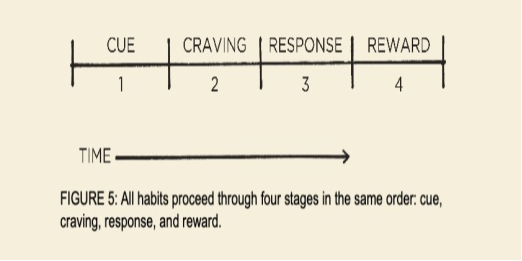
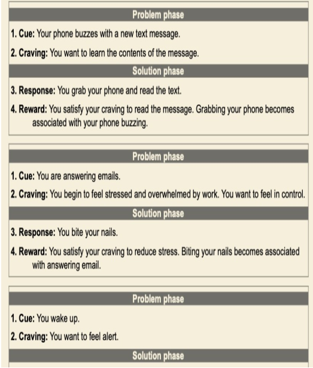
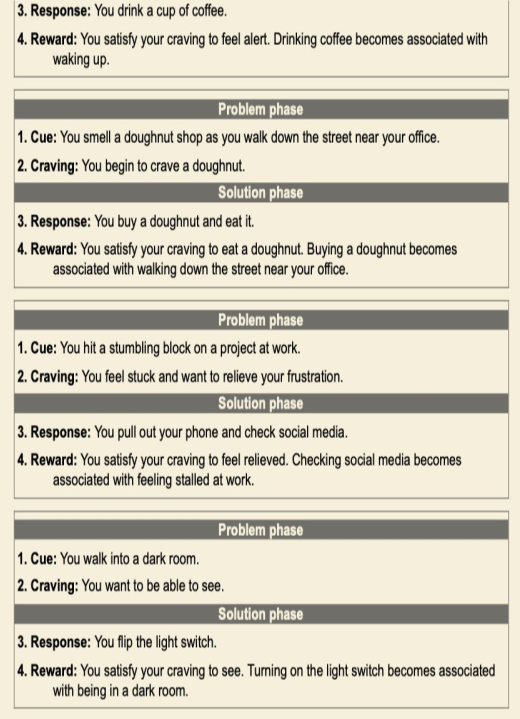
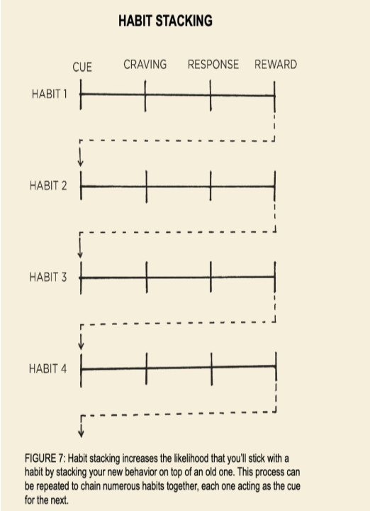

CHƯƠNG 1 - NHỮNG NGUYÊN TẮC CƠ BẢN
Tại sao những thay đổi nhỏ lại tạo ra sự khác biệt lớn Sức mạnh đáng kinh ngạc của những thói quen nhỏ bé. Số phận của giới đua xe đạp Anh Quốc đã thay đổi chỉ sau một ngày vào năm 2013. Tổ chức đua xe chuyên nghiệp Anh Quốc đã thuê Dave Brailsford vào vị trí giám đốc điều hành. Vào thời điểm đó những tay đua chuyên nghiệp ở Anh đã trải qua gần 100 năm không có giải thưởng nào. Người Anh chỉ giành được một huy chương vàng đơn nam tại kỳ thế vận hội Olympic từ năm 1908, và họ thi đấu với phong độ ngày càng tệ tại giải đua xe lớn nhất thế giới, Tour de France.
Trong suốt 110 năm, không có vận động viên người Anh nào giành thắng lợi tại giải đấu này. Thực tế là màn trình diễn của các tay đua người Anh dở đến mức một trong những nhà sản xuất xe đạp hàng đầu Châu Âu từ chối bán xe đạp cho tuyển Anh với lý do họ e ngại rằng doanh số bán hàng sẽ bị sụt giảm nếu những tay đua chuyên nghiệp khác thấy tuyển Anh sử dụng xe đua của họ. Brailsford được thuê để đưa tuyển Anh vào quỹ đạo mới. Điều khiến cho ông ấy khác biệt với những người tiền nhiệm là lời cam kết kiên định theo đuổi chiến lược mà ông ấy gọi là "tổ hợp thành tựu biên" [nguyên gốc "the aggregation of marginal gains"]
Triết học định nghĩa đây là việc tìm kiếm một thay đổi cải thiện rất nhỏ trong mọi thứ bạn làm hàng ngày. Brailsford cho biết, "Nguyên tắc bắt nguồn từ ý tưởng rằng nếu bạn chia nhỏ mọi thứ bạn có thể nghĩ về việc đạp xe, và sau đó cải thiện từng 1% một, bạn sẽ tạo ra một thay đổi đáng kể khi bạn gộp chung vào với nhau". Brailsford và ban huấn luyện đã bắt đầu bằng việc tạo ra những điều chỉnh nhỏ mà bạn có thể mong chờ từ một đội đua xe chuyên nghiệp. Họ đã tái cấu trúc lại yên xe để khiến chúng thoải mái hơn và dùng cồn tẩy rửa cho lốp xe để có ma xát tốt hơn.
Họ cũng yêu cầu các tay đua mặc áo giữ nhiệt để duy trì mức nhiệt lý tưởng cho cơ bắp trong khi đạp xe và sử dụng cảm biến phản hồi sinh học để giám sát phản ứng của từng vận động viên đối với từng bài tập luyện cụ thể. Cả đội đã thử nghiệm nhiều loại vải bằng ống thông gió và để những tay đua xe ngoài trời của họ thử mặc những bộ đồ thi đấu trong nhà, những bộ đã được chứng minh là nhẹ và thoáng khí hơn.
Nhưng họ không chỉ dừng lại ở đây. Brailsfords và đội nhóm của mình đã tiếp tục tìm kiếm 1 phần trăm tiến bộ trong những lĩnh vực mà không ai ngờ tới. Họ thử nghiệm nhiều loại gel mát xa khác nhau để tìm ra loại giúp phục hồi cơ nhanh nhất. Họ còn thuê cả một bác sĩ phẫu thuật để dạy cho từng vận động viên cách rửa tay tốt nhất sao cho giảm thiểu các nguy cơ bị cảm lạnh. Họ quyết định loại gối và đệm đem lại giấc ngủ chất lượng nhất cho các tay đua. Họ thậm chí còn sơn lại nội thất chiếc xe chuyên chở đội tuyển thành màu trắng, việc này giúp họ nhìn thấy được những vết bụi li ti mà thường không ai để ý tới nhưng lại có thể làm tụt giảm hiệu suất của một chiếc xe đạp đua tinh xảo.
Khi những điều vừa nêu ở trên và hàng trăm những cải tiến nhỏ khác kết hợp lại mang tới những thay đổi một cách nhanh chóng mà không ai có thể nghĩ tới. Chỉ sau 5 năm kể từ khi Brailsford nắm quyền, đội tuyển đua xe đạp Anh đã thống trị đường đua trong kỳ Thế vận hội năm 2008 tại Bắc Kinh, họ đã dành chiến thắng ngỡ ngàng hơn 60 phần trăm số lượng huy chương vàng của kỳ thế vận hội. 4 năm sau, khi kỳ Thế vận hội được tổ chức tại Luân Đôn, người Anh lại lần nữa dẫn đầu khi họ lập được 9 kỷ lục Olympic và 7 kỷ lục thế giới. Cũng trong năm đó, Bradley Wiggins đã trở thành tay đua người Anh đầu tiên giành chiến thắng tại giải thi đấu Tour de France.
Một năm sau đó đồng đội của anh là Chris Froome giành giải vô địch và duy trì thành tích đó vào các năm 2015, 2016, và 2017, điều này đã giúp đội tuyển Anh 5 lần giành chức vô địch Tour de France trong vòng 6 năm. Trong suốt quá trình 10 năm từ 2007 đến 2017, các tay đua người Anh đã 178 lần vô địch thế giới và 66 lần giành huy chương vàng Olympic và Paralympic và 5 lần vô địch giải Tour de France, đây được coi là đội đua thành công nhất trong lịch sử đua xe đạp thế giới. [* Khi cuốn sách này được xuất bản, các thông tin mới về đội đua xe đạp Anh quốc vẫn tiếp tục được cập nhật].
Bằng cách nào điều này có thể xảy ra? Bằng cách nào một đội tuyển mà trước đây chỉ toàn những tay đua bình thường lột xác thành đội tuyển của những nhà vô địch chỉ với những thay đổi nhỏ bé mà mới đầu tưởng như cùng lắm chỉ tạo ra sự khác biệt đơn giản nhất? Tại sao những cải thiện nhỏ bé từng chút một lại tạo nên những kết quả đáng kinh ngạc đến như vậy, và bằng cách nào bạn làm được như vậy trong cuộc sống của mình?
TẠI SAO NHỮNG THÓI QUEN NHỎ LẠI TẠO NÊN MỘT SỰ THAY ĐỔI LỚN
Chúng ta rất dễ bị đánh giá quá lên tầm quan trọng của một khoảnh khắc đặc biệt và xem nhẹ giá trị của những tiến bộ nhỏ hàng ngày. Chúng ta thường xuyên tự thuyết phục bản thân rằng những thành công vĩ đại đòi hỏi những hành động lớn lao. Dù cho đó có là việc giảm cân, xây dựng công việc kinh doanh, viết một cuốn sách, giành giải vô địch, hoặc đạt được bất kỳ mục tiêu nào đó, chúng ta cũng tạo áp lực cho bản thân phải làm nên những điều chấn động mà tất cả mọi người phải ca tụng. Trong lúc đó thì việc cải thiện chỉ 1 phần trăm không có gì đáng chú ý cả - đôi khi là nó chẳng là cái quái gì - nhưng nó có ý nghĩa rất quan trọng, đặc biệt là trong một thời gian dài.
Sự khác biệt mà một cải thiện nhỏ có thể đem lại sau một thời gian là hết sức đáng kinh ngạc. Đây là cách mà phép toán này vận hành: nếu bạn có thể đạt được 1 phần trăm tiến bộ mỗi ngày, bạn sẽ tiến bộ gấp 37 lần so với thời gian bạn bỏ ra. Ngược lại nếu mỗi ngày bạn lại tệ hơn 1 phần trăm liên tục trong vòng 1 năm, bạn chắc chắn sẽ về lại con số 0. Việc nào bắt đầu bằng những thắng lợi nho nhỏ hoặc những thất bại không đáng kể thì sẽ dần dần được cải thiện tốt lên. 1% cải thiện mỗi ngày Những thói quen chính là lãi suất kép của việc tự cải thiện bản thân.
Giống như cách đồng tiền sinh sôi nhiều lần nhờ lãi suất kép, các ảnh hưởng từ thói quen sẽ được nhân lên nhiều lần nếu bạn lặp lại chúng. Những thói quen này dường như tạo ra rất ít sự khác biệt nếu tính riêng mỗi ngày và tác dụng của chúng tính theo tháng, theo năm có thể rất là to tát. Phải sau hai, năm hoặc có lẽ 10 năm sau nhìn lại chúng ta mới thấy rõ được giá trị của những thói quen tốt và cái giá phải trả của những thói quen xấu. Đây có lẽ là một khái niệm khó để có thể đánh giá trong cuộc sống hàng ngày.
Chúng ta thường bỏ qua những thay đổi nhỏ bởi vì chúng có vẻ chẳng mấy rõ rệt ngay tại thời điểm đấy. Nếu bạn dành dụm một khoản tiền nhỏ lúc này, bạn cũng chẳng trở thành tỷ phú được. Nếu bạn tập gym đều đặn 3 ngày một tuần, bạn cũng vẫn chẳng có được hình thể đẹp. Nếu bạn học tiếng Trung một tiếng vào tối nay, bạn vẫn không thực sự học ngôn ngữ đó. Chúng ta tạo ra một vài thay đổi nhưng kết quả thường không xuất hiện nhanh chóng và chúng ta lại trượt lại về thói quen cũ. Thật không may là quá trình chuyển biến chậm chạp này cũng làm cho chúng ta dễ dàng quay trở lại với những thói quen không tốt. Nếu bạn ăn một bữa ăn không hợp lý ngày hôm nay thì cũng chẳng thấy có gì ảnh hưởng hết. Nếu bạn làm việc trễ và bỏ bê gia đình thì họ cũng sẽ tha thứ cho bạn. Nếu như bạn trì hoãn và để công việc của bạn sang ngày mai giải quyết, thường thì bạn cũng vẫn sẽ có thời gian để hoàn thành công việc này sau đó. Chúng ta dễ dàng gạt bỏ một ý định
Ngày qua ngày, khi chúng ta lặp đi lặp lại 1 phần trăm những lỗi sai bằng việc tái phạm lại những quyết định sai lầm, những lỗi nhỏ xíu và bao biện cho những lỗi lầm đó, những lựa chọn nhỏ đó của chúng ta sẽ dẫn tới những kết quả tồi tệ. Nó là sự tích tụ của rất nhiều sai lầm - 1 phần trăm ở đây, ở kia - và chúng hiển nhiên mang lại vấn đề. Những ảnh hưởng từ việc thay đổi thói quen tương tự như ảnh hưởng của việc thay đổi tọa độ đối với lộ trình một chuyến bay. Hãy tưởng tượng rằng bạn đang trên một chuyến bay từ Los Angeles tới New York, nếu máy bay cất cánh từ sân bay LAX và sau đó phi công điều chỉnh chỉ 3.5 độ Bắc, bạn sẽ hạ cánh tại Washington, D.C. thay vì New York.
Chỉ một thay đổi nhỏ không đáng kể lúc cất cánh - mũi máy bay chỉ lệch đi có vài feet - vậy mà bạn đã bay dọc cả nước Mỹ và hạ cánh tại địa điểm cách điểm đến của bạn hàng trăm dặm. Tương tự như vậy, một thay đổi tưởng chừng nhỏ xíu trong thói quen hàng ngày của bạn có thể hướng cuộc sống của bạn tới đích đến hoàn toàn khác biệt. Lựa chọn 1 phần trăm tốt hơn hay 1 phần trăm tệ đi dường như không có gì khác biệt ngay tại thời điểm đó, nhưng về lâu dài thì những lựa chọn đó sẽ quyết định sự khác biệt giữa việc bạn là ai và bạn có thể làm những gì.
Thành công là sản phẩm của những thói quen hàng ngày, chứ không phải là sự lột xác chỉ một lần duy nhất trong đời. Và ngay tại thời điểm này bạn có phải là một người thành công hay không cũng không quan trọng. Điều quan trọng ở đây là những thói quen của bạn chỉ bạn đúng con đường dẫn tới thành công. Điều bạn cần làm ở đây là chú tâm hơn nữa vào quỹ đạo hơn là những kết quả trong hiện tại. Nếu bạn không thay đổi thói quen thì chẳng đem lại kết quả gì. Ngược lại, nếu bạn phá vỡ những thói quen hiện tại, mỗi tháng một chút, và bạn đã đi trên con đường dẫn đến sự tự do về tài chính - cho dù sự thay đổi diễn ra chậm hơn so với sự kỳ vọng ban đầu của bạn. Những thay đổi nơi bạn chính là thước đo những thói quen của bạn.
Giá trị tài sản ròng chính là thước đo cho những thói quen tài chính của bạn. Cân nặng chính là thước đo cho những thói quen ăn uống của bạn. Kiến thức chính là thước đo cho những thói quen học tập của bạn. Sự lộn xộn là thước đo cho những thói quen ngăn nắp gọn gàng của bạn. Bạn sẽ nhận được những gì bạn hành động lặp đi lặp lại. Nếu bạn muốn dự đoán được tương lại mình sẽ như thế nào, tất cả những gì bạn cần làm là theo dõi biểu đồ lên xuống của những thay đổi tích cực hay thất bại nhỏ bé, và nhận ra những lựa chọn hàng ngày của bạn về lâu dài, 10 hay 20 năm nữa sẽ kéo biểu đồ đi xuống như thế nào. Bạn có tiêu ít hơn thu nhập hàng tháng của mình? Bạn có tập gym hàng tuần? Bạn có đọc sách và học những kiến thức mới mỗi ngày? Những cuộc chiến nho nhỏ đó chính là những thứ quyết định tương lai của bạn đấy. Thời gian sẽ phân định rõ ranh giới giữa thành công và thất bại. Bạn cho nó ăn gì thì theo thời gian nó sẽ lớn lên như vậy. Nếu là thói quen tốt thì thời gian sẽ là đồng minh của bạn. Nếu là thói quan xấu thì thời gian sẽ là kẻ thù của bạn. Thói quen chính là một con dao hai lưỡi.
Thói quen xấu sẽ khiến bạn thất bại, cũng dễ dàng như vậy thói quen tốt sẽ khiến bạn thay đổi tích cực. Chính vì như vậy mà việc hiểu rõ ràng các chi tiết là điều cần thiết. Bạn cần phải biết các thói quen vận hành ra sao và thiết kế chúng làm sao cho phù hợp với sở thích của bạn, để bạn có thể tránh được cái lưỡi sắc bén nguy hiểm kia của con dao.
THÓI QUEN CÓ THỂ LÀ ĐỒNG MINH HOẶC CÓ THỂ LÀ KẺ CHỐNG LẠI BẠN
*Tổ hợp năng suất >< Tổ hợp Stress:
Tổ hợp năng suất: Hoàn thành thêm một nhiệm vụ trong một ngày bất kỳ là một bước nhỏ, nhưng kết hợp lại thì đó lại là một con số đáng kể sau cả một quá trình dài. Hiệu quả của việc tự động thực hiện các nhiệm vụ cũ và làm thành thục các kỹ năng mới sẽ càng to lớn hơn nữa. Bạn thực hiện càng nhiều nhiệm vụ mà không cần suy nghĩ, não bạn càng tự do tập trung vào những lĩnh vực khác.
Tổ hợp stress: Sự trắc trở do tắc nghẽn. Gánh nặng của trách nhiệm. Sự lo lắng về việc thỏa mãn các nhu cầu. Sự căng thẳng làm tăng huyết áp. Thực chất chúng ta hoàn toàn có thể kiểm soát được những nguyên nhân gây ra stress phố biến vừa nêu ở trên. Nhưng khi những điều này diễn ra trong nhiều năm thì những căng thẳng nhỏ này sẽ tích tụ gây ra những vấn đề về sức khỏe.
*Tổ hợp kiến thức >< Tổ hợp những suy nghĩ tiêu cực:
Tổ hợp kiến thức: Học một điều mới không làm bạn trở thành thiên tài nhưng chắc chắn về lâu dài sẽ làm bạn thay đổi. Hơn nữa, mỗi một cuốn sách bạn đọc không chỉ đem lại cho bạn những kiến thức mới mà còn mở ra những góc nhìn mới về những vấn đề cũ. Như Warren Buffets đã nói, "Đó chính là tác dụng của kiến thức, nó đem lại sự sinh sôi nảy nở, giống như lãi suất kép vậy".
Tổ hợp những suy nghĩ tiêu cực: Những suy nghĩ kiểu như mình vô dụng, ngu ngốc hay xấu xí xuất hiện càng nhiều thì cuộc đời bạn càng dễ diễn ra theo chiều hướng đó. Bạn bị mắc kẹt trong cái thòng lọng suy nghĩ kiểu đó. Điều này cũng đúng trong cách bạn suy nghĩ về người khác. Một khi bạn bị rơi vào cái bẫy của thói quen đánh giá người khác là cáu kỉnh, không công bằng, ích kỷ, thì bạn sẽ gặp những kiểu người như thế ở khắp nơi
*Tổ hợp mối quan hệ >< Tổ hợp xúc phạm.
Tổ hợp mối quan hệ: Mọi người phản chiếu cách hành xử của bạn. Bạn càng giúp đỡ nhiều người, càng nhiều người muốn giúp đỡ bạn. Trở nên tốt đẹp hơn một chút trong các mối quan hệ có thể mang lại một mạng lưới giao tiếp rộng và mối liên hệ bền chặt theo thời gian.
Tổ hợp xúc phạm: Quấy phá, chống đối, những động thái lớn hiếm khi là kết quả của một sự kiện đơn lẻ. Một loạt những sự chống đối nhỏ và những sự kiện làm trầm trọng thêm mỗi ngày cứ từ từ được nhân lên cho đến khi một sự kiện làm tức nước vỡ bờ và sự giận giữ bùng nổ như pháo bông vậy
QUÁ TRÌNH TẠO RA SỰ KHÁC BIỆT DIỄN RA NHƯ THẾ NÀO?
Hãy tưởng tượng một khối nước đá được đặt trên bàn ngay trước mặt bạn, căn phòng thì lạnh lẽo và bạn thì có thể thấy mình thở ra khói. Nhiệt độ trong phòng là 25 độ F, và rồi căn phòng được làm ấm lên từ từ. 26 độ, 27 độ, 28 độ. Khối nước đá vẫn ở đó trên bàn ngay trước mặt bạn. 29 độ, 30, 31, và vẫn chẳng có chuyện gì xảy ra cả. Và rồi tiếp theo 32 độ. Khối nước đá bắt đầu tan chảy. Cứ mỗi một độ nhích lên, dường như rất khó nhận ra sự khác biệt so với nền nhiệt trước đó, nhưng nó lại đem tới sự thay đổi to lớn. Bước đột phá tại thời điểm hiện tại thường là kết quả của rất nhiều hành động trước đó, những hành động đã đặt nền móng cần thiết cho sự thay đổi cốt yếu.
Chúng ta có thể thấy mô hình này diễn ra ở khắp mọi nơi. Người ta chỉ phát hiện ra các tế bào ung thư khi nó đã phát triển được đến 80% vòng đời của nó, và phát ra trong cơ thể người trong vòng mấy tháng. Cây trúc chỉ là măng trúc trong vòng 5 năm đầu tiên, đây là giai đoạn nó phát triển hệ thống rễ trùm bám sâu vào lòng đất trước khi phát triển nhảy vọt đạt tới chiều cao 90 feet chỉ trong vòng 6 tuần. Tương tự như vậy, các thói quen dường như không đem lại sự khác biệt nào cho tới khi bạn vượt qua được ngưỡng giới hạn và đạt tới mức biểu hiện tốt hơn.
Trong giai đoạn đầu và giữa của hành trình, thường sẽ xuất hiện giai đoạn chán nản [*Từ nguyên gốc: Valley of Disappointment]. Bạn mong đợi rằng sẽ thấy sự tiến bộ rõ rệt và rồi thấy thật thất vọng vì những sự thay đổi dường như không có hiệu quả gì sau nhiều ngày, nhiều tuần, nhiều tháng thực hiện. Điều này khác với việc bạn đang làm mà không có mục tiêu rõ ràng. Đó là điều tất yếu của một quá trình tích lũy: những thành quả to lớn cuối cùng còn chờ ở phía sau. Đây cũng là một trong những lý do mà tại sao không dễ dàng trong việc xây dựng và duy trì thói quen. Mọi người tạo ra một số thay đổi nhưng rồi không thấy được những kết quả rõ ràng và thế là họ quyết định dừng lại. Bạn nghĩ, "Mình đã tập chạy hàng ngày trong vòng một tháng, vậy tại sao cơ thể mình chẳng có gì thay đổi vậy?"
Một khi bạn có những suy nghĩ kiểu đó, các thói quen tốt rất dễ bị cho ra rìa. Nhưng để đạt những khác biệt lớn lao, bạn cần phải kiên trì duy trì các thói quen đủ lâu để phá vỡ trạng thái bình ổn này - tôi gọi đó là trạng thái ổn định của những khả năng tiềm ẩn [* Từ nguyên gốc: Plateau of Latent Potential]. Nếu bạn đang vật lộn với việc xây dựng thói quen tốt và loại bỏ thói quen xấu thì đừng dừng lại nhé bởi vì bạn đang bỏ lỡ khả năng cải thiện của mình. Đây cũng là trạng thái thường gặp vì bạn chưa vượt qua được trạng thái ổn định của những khả năng tiềm ẩn. Phàn nàn về việc không đạt được thành công dù đã rất cố gắng giống như phàn nàn việc khối nước đá không tan chảy khi bạn tăng nhiệt độ từ 25 tới 31 độ vậy. Công sức của bạn sẽ không bị phí hoài đâu. Nó chỉ đang được tích lũy lại. Và mọi việc sẽ có chuyển biến tại mức 32 độ.
Tại thời điểm cuối cuối khi bạn vượt qua được trạng thái ổn định của những khả năng tiềm ẩn, mọi người sẽ ca ngợi nó là thành công thần kỳ chỉ sau một đêm. Mọi người chỉ thấy được kết quả cuối cùng mà không thấy được cả quá trình. Nhưng bạn là người biết rõ bạn đã nỗ lực thực hiện một thời gian dài như thế nào, có những lúc mà dường như mọi cố gắng của bạn không đem lại kết quả gì, chính điều này đã đem lại bước nhảy vọt ngày hôm nay. Đây chính là cách con người cân bằng với những áp lực tự nhiên. Hai mảng kiến tạo cùng va vào một mảng kiến tạo khác hàng triệu năm về trước, lực va chạm vẫn âm thầm ảnh hưởng tới cả 3 mảng kiến tạo cùng một lúc. Rồi một ngày chúng lại va vào nhau một lần nữa, cũng theo cách thức đã diễn ra từ nhiều thế kỷ trước, nhưng lần này với một lực ép mạnh hơn lần trước rất nhiều lần.
Một trận động đất xảy ra. Sự thay đổi cần nhiều năm trước khi bùng nổ chỉ trong một lần. Sự thành thạo yêu cầu kiên nhẫn. Đội bóng rổ San Antonio Spurs, một trong những đội bóng rổ thành công nhất trong lịch sử thi đấu của giải NBA treo một câu nói của nhà cải cách xã hội Jacob Riis trong phòng thay đồ của đội bóng: "Khi bế tắc, tôi đi tới và ngắm nhìn vào lưỡi cưa của máy cắt đá xẻ vào tảng đá, lưỡi cưa cắt vào tảng đá có lẽ là hàng trăm lần nhưng không hề xuất hiện một vết nứt nào trên bề mặt tảng đá. Đến lần thứ một trăm và với chỉ một cú đập mạnh tảng đá đã vỡ ra làm đôi. Và tôi biết rằng không phải nhờ cú đập đó mà tảng đá vỡ ra - mà phải nhờ vào cả một quá trình trước đó". Tất cả những điều lớn lao đều bắt đầu từ những điều nhỏ bé.
Mỗi một hạt giống thói quen là một quyết định nhỏ bé, đơn lẻ. Nhưng khi những quyết định này được lặp đi lặp lại thì thói quen sẽ bắt rễ và phát triển mạnh mẽ. Và khi bộ rễ bản thân nó bền chắc thì những cành nhánh sẽ mọc ra. Việc phá bỏ một thói quen cũ không lành mạnh giống như việc nhổ tận rễ của một cây sồi khỏe mạnh trong chính bản thân chúng ta. Và việc thiết lập thói quen mới lành mạnh giống như việc chăm bẵm một đóa hoa bé nhỏ mỗi ngày vào một giờ nhất định. Nhưng điều gì quyết định việc liệu chúng ta có kiên trì thực hiện thói quen đủ lâu để sống sót vượt qua được trạng thái ổn định của những khả năng tiềm ẩn và đạt được bước đột phá? Hãy quên mục tiêu đi, thay vào đó tập trung vào hệ thống Có một niềm tin phổ biến rằng cách tốt nhất để đạt được mọi điều mình mong muốn trong cuộc sống - như giữ phom dáng chuẩn, kinh doanh thành công, sống thoải mái hơn, ít lo âu hơn, dành nhiều thời gian hơn cho gia đình, bạn bè - thì cần phải đề ra những mục tiêu cụ thể và khả thi. Tôi cũng đã xây dựng những thói quen của mình theo cách đó trong rất nhiều năm. Mỗi một thói quen đi liền với một mục tiêu cần đạt tới. Tôi đề ra những mục tiêu đạt điểm cao ở trường, đạt đến số kg mong muốn trong tập gym, kiếm được bao lợi nhuận bản thân mong muốn trong kinh doanh.
Cũng có một vài mục tiêu thành công, còn đa số đều thất bại. Bất chợt tôi bắt đầu nhận ra rằng kết quả mà tôi đạt được chẳng mấy liên quan tới những mục tiêu mà mình đề ra, mà liên quan mật thiết tới hệ thống mà tôi tuân thủ. Vậy sự khác biệt giữa hệ thống và mục tiêu là gì? Sự khác biệt đầu tiên tôi đã học được từ Scott Adams, hoạ sĩ tranh biếm hoạ tác giả của cuốn truyện tranh Dilbert. Mục tiêu là kết quả mà bạn mong muốn đạt được. Hệ thống là quá trình dẫn dắt bạn tới những kết quả đó.
- Nếu bạn là một huấn luyện viên, mục tiêu của bạn chắc hẳn là dành chức vô địch. Hệ thống của bạn ở đây là cách bạn chiêu mộ cầu thủ, quản lý các trợ lý huấn luyện viên và hướng dẫn tập luyện.
- Nếu bạn là một chủ doanh nghiệp, mục tiêu của bạn chắc hẳn là xây dựng một đế chế kinh doanh đáng giá triệu đô. Hệ thống của bạn là cách mà bạn đánh giá các ý tưởng kinh doanh của doanh nghiệp mình, tuyển dụng nhân viên và chạy các chiến dịch marketing
- Nếu bạn là một nhạc công, mục tiêu của bạn chắn hẳn là chơi một tuyệt phẩm mới. Hệ thống của bạn là việc bạn có thường xuyên luyện tập, cách bạn phá vỡ và vượt qua được những tiêu chuẩn khắt khe, và phương pháp mà bạn tiếp nhận những chỉ dạy từ người hướng dẫn cho bạn
Và bây giờ có một câu hỏi thú vị được đặt ra là: Nếu bạn hoàn toàn chẳng quan tâm gì tới kết quả mà chỉ tập trung vào hệ thống của mình thì bạn sẽ chắc chắn thành công? Ví dụ, nếu bạn là một huấn luyện viên bóng chuyền và bạn không quan tâm gì tới mục tiêu là giành chức vô địch và chỉ tập trung vào việc đội của bạn tập luyện như thế nào mỗi ngày, liệu bạn có thành công?
Tôi nghĩ là có. Mục tiêu trong bất kỳ môn thể thao nào chính là giành điểm cao nhất lúc chung cuộc, nhưng thật ngớ ngẩn nếu như cả buổi thi đấu chỉ nhìn chăm chăm vào bảng điểm số. Cách duy nhất để dành chiến thắng thực sự là tiến bộ hơn mỗi ngày. Người đã từng 3 lần vô địch giải Super Bowl Bill Walsh đã phát biểu, "Điểm số sẽ tự lo liệu cho chính nó." Điều này cũng đúng trong các lĩnh vực khác của cuộc sống.
Nếu bạn muốn đạt kết quả tốt hơn, hãy quên việc đề ra các mục tiêu đi. Thay vào đó hãy tập trung vào hệ thống. Ý của tôi muốn nói ở đây là gì? Vậy các mục tiêu là vô nghĩa sao? Dĩ nhiên là không rồi. Mục tiêu giúp chúng ta định hướng, nhưng hệ thống giúp chúng ta vạch ra tiến trình thực hiện. Một loạt các vấn đề phát sinh khi bạn suy nghĩ quá nhiều đến mục tiêu, không còn đủ thời gian cho việc thiết kế hệ thống.
Vấn đề #1: Kẻ thắng, người thua đều có chung một mục tiêu. Việc đề ra những mục tiêu là một trường hợp điển hình của việc đánh giá phiến diện một chiều. Chúng ta chỉ mải tập trung vào những người thành công lúc chung cuộc - những kẻ sống sót - và đánh giá phiến diện rằng những mục tiêu đầy tham vọng đã giúp họ thành công, trong khi đó lại bỏ quên mất tất cả những người cũng có cùng những mục tiêu đó nhưng lại không thành công. Tất cả các vận động viên tham dự Thế Vận Hội Olympic đều khao khát huy chương vàng.
Mỗi một ứng viên đều mong muốn được tuyển dụng. Và nếu người thành công hay không thành công đều chia sẻ chung mục tiêu thì đương nhiên sẽ không có gì khác biệt giữa mục tiêu của người chiến thắng và kẻ thua cuộc. Không phải mục tiêu chiến thắng giải đua Tour de France đã thúc đẩy đội tuyển Anh lên đến đỉnh cao sự nghiệp. Như những đội đua chuyên nghiệp khác Chắc chắn những năm trước đó họ cũng đều khao khát chiến thắng giải đua. Mục tiêu vẫn luôn là như vậy. Nhưng chỉ khi họ thực hiện một hệ thống các cải thiện nhỏ liên tục thì họ mới đạt được kết quả khác biệt.
Vấn đề #2: Đạt được một mục tiêu chỉ là thay đổi mang tính nhất thời. Hãy tưởng tượng bạn có một căn phòng bừa bộn và bạn đề ra mục tiêu là dọn dẹp nó. Nếu bạn chính thức bắt tay vào dọn dẹp thì lúc này bạn sẽ có một căn phòng gọn gàng sạch sẽ. Nếu bạn tiếp tục lõm bõm kiểu này, những thói quen đáng bỏ đi này trước tiên sẽ đem tới một căn phòng bừa bãi, sau đó sớm thôi bạn sẽ thấy cả một mớ hỗn độn và hi vọng sẽ có một sự cải thiện. Thực chất bạn đang theo đuổi cùng một kết quả mà thôi bởi vì bạn chưa bao giờ thay đổi hệ thống phía sau nó
Bạn điều trị một triệu chứng bệnh mà không tìm hiểu nguyên nhân căn bệnh. Đạt được một mục tiêu chỉ thay đổi cuộc sống của bạn trong chốc lát. Điều này chỉ là sự cải thiện đột xuất. Chúng ta nghĩ chúng ta cần thay đổi kết quả đạt được, nhưng kết quả không phải vấn đề. Thứ mà chúng ta thật sự cần phải thay đổi là hệ thống thứ mà tạo nên những kết quả đó. Khi bạn giải quyết vấn đề ở tầm kết quả, bạn chỉ giải quyết vấn đề tạm thời mà thôi. Để cải thiện tốt hơn, bạn cần giải quyết vấn đề ở tầm hệ thống. Sửa đổi những yếu tố đầu vào, các yếu tố đầu ra sẽ tự thay đổi theo.
Vấn đề #3: Các mục tiêu giới hạn hạnh phúc của bạn. Ảo tưởng ẩn bên dưới mỗi một mục tiêu chính là: "Một khi tôi đạt được mục tiêu, tôi sẽ hạnh phúc." Vấn đề của trạng thái tâm lý đặt mục tiêu lên hàng đầu là việc bạn không ngừng vứt bỏ hạnh phúc sang một bên cho tới khi bạn đạt được một điều gì đó. Tôi đã trượt vào cái bẫy này rất nhiều lần không đếm xuể. Trong nhiều năm hạnh phúc đối với tôi là một cái gì đó mình sẽ được hưởng trong tương lai. Tôi tự hứa với bản thân rằng một khi tôi đạt được 20 pounds cơ bắp hoặc sau khi việc kinh doanh của tôi được lên tạp chí New York Times thì lúc đó tôi mới nghỉ ngơi.
Thêm vào đó mục tiêu còn tạo ra một xung đột "có hoặc không" [từ gốc "either-or" conflict]: hoặc bạn đạt được mục tiêu và thành công, hoặc bạn thất bại và là một con người đáng thất vọng. Bạn tự giam cầm bản thân bởi suy nghĩ về một phiên bản chật hẹp của hạnh phúc. Đây là một điều sai lầm. Việc này không giống với việc những việc xảy ra trong cuộc sống thực tế của bạn sẽ ăn khớp hoàn toàn với hành trình mà bạn đã hoạch định trong đầu. Thật là vớ vẩn khi hạn chế sự thoả mãn của bản thân trong một kịch bản khi có rất nhiều con đường dẫn đến thành công. Trạng thái tâm lý đặt hệ thống lên đầu sẽ đem lại thuốc đặc trị. Khi bạn yêu thích tiến trình hơn là kết quả, bạn không phải chờ đợi để cho phép bản thân mình được hạnh phúc nữa. Bạn có thể thấy hài lòng bất cứ lúc nào khi đang trong tiến trình. Và một hệ thống có thể thành công theo nhiều cách khác nhau, chứ không chỉ theo đúng như giả định ban đầu của bạn.
Vấn đề #4: Mục tiêu sẽ xung đột với tiến trình về lâu về dài. Rốt cuộc một tư duy đặt mục tiêu lên hàng đầu có thể tạo ra hiệu ứng yo-yo. Rất nhiều vận động viên chạy tập luyện chăm chỉ trong nhiều tháng nhưng ngay khi họ cán đích, họ cũng dừng luôn việc tập luyện lại. Cuộc đua không còn là động lực thúc đẩy họ nữa. Khi bạn tập trung làm việc chăm chỉ để đạt được mục tiêu nào đó, điều gì sẽ thúc đẩy bạn đi tiếp khi bạn đã đạt được nó rồi? Đây cũng chính là lý do giải thích tại sao nhiều người lại quay trở lại với các thói quen cũ sau khi làm được một mục tiêu nào đó.
Mục đích của việc hoạch định mục tiêu là nhằm chiến thắng cuộc chơi. Mục đích của việc xây dựng hệ thống là để tiếp tục cuộc chơi. Chiến lược lâu dài là tư duy không đặt mục tiêu. Nó không phải là việc đạt được một mục tiêu nhất định nào đó. Nó là vòng tuần hoàn của những thay đổi không ngừng và sự tiến bộ liên tục. Cuối cùng sự cam kết với tiến trình sẽ quyết định sự tiến bộ của bạn.
HỆ THỐNG CÁC THÓI QUEN NGUYÊN TỬ
Nếu bạn đang gặp khó khăn trong việc thay đổi các thói quen của bản thân thì vấn đề không nằm ở bạn. Vấn đề nằm ở hệ thống của bạn. Những thói quen xấu lặp đi lặp lại không phải do bạn không muốn thay đổi mà bởi vì bạn có một hệ thống thay đổi sai lầm. Bạn không nâng tầm mục tiêu. Bạn tự hạ tầm hệ thống của mình. Tâp trung vào hệ thống tổng quát hơn là vào một mục tiêu đơn lẻ chính là một trong những nền tảng chính của cuốn sách này. Đây cũng chính là ý nghĩa sâu xa hơn phía sau của từ "nguyên tử". Cho đến lúc này bạn chắc hẳn đã nhận ra một thói quen nguyên tử chính là một thay đổi nhỏ bé, là thành tựu cận biên, là 1 phần trăm tiến bộ.
Nhưng các thói quen nguyên tử không chỉ là những thói quen cũ mà còn rất nhỏ. Chúng rất nhỏ bé nhưng chúng là một phần của cả một hệ thống to lớn hơn. Giống như các nguyên tử là những tập hợp của các phân tử, các thói quen nguyên tử chính là tập hợp của những kết quả nổi bật. Những thói quen giống như các hạt nguyên tử của cuộc đời chúng ta. Mỗi một thói quen là một đơn vị cơ bản đóng góp vào sự cải thiện chung của chúng ta. Mới đầu những thay đổi nhỏ xíu này dường như không có hiệu quả gì nhưng sớm thôi chúng gắn kết tập trung lại với nhau và tạo nên những chiến thắng lớn lao hơn gấp nhiều lần và không phí hoài công sức chúng ta đã bỏ ra. Chúng vừa nhỏ bé mà cũng rất lớn lao.
Đây chính là ý nghĩa của cụm từ "thói quen nguyên tử" - một quá trình luyện tập hoặc thực hành đều đặn không chỉ đơn giản mà còn dễ thực hiện nhưng nó lại là khởi nguồn của nguồn sức mạnh phi thường; một phần của hệ thống phát triển sâu sắc.
Tóm tắt chương
- Thói quen là lãi kép từ việc cải thiện bản thân. Tiến bộ 1% mỗi ngày về lâu dài sẽ thành con số đáng kể.
- Thói quen là con dao hai lưỡi. Chúng có thể phục vụ bạn, cũng có thể chống lại bạn, đây cũng chính là lí do tại sao chúng ta cần phải hiểu chi tiết về chúng.
- Những thay đổi nhỏ thường không thấy rõ được sự khác biệt cho tới khi bạn vượt qua được ngưỡng tới hạn của bản thân. Những thay đổi mạnh mẽ nhất của bất kỳ tiến trình sâu sắc nào cũng cần có thời gian. Việc bạn cần làm là thật kiên nhẫn
- Một thói quen nguyên tử là một thói quen nhỏ, một phần của hệ thống lớn hơn. Giống như những nguyên tử là một khối tập hợp của các phân tử, các thói quen nguyên tử là tập hợp của các kết quả đáng ghi nhận.
- Nếu bạn mong muốn những kết quả tốt hơn, vậy thì hãy quên việc đề ra các mục tiêu đi. Thay vào đó hãy tập trung vào các hệ thống của bạn. Bạn đừng nâng tầm các mục tiêu. Hãy nâng cấp các hệ thống của bạn.
CHƯƠNG 2
CÁCH THỨC CÁC THÓI QUEN HÌNH THÀNH NÊN ĐẶC TÍNH / NHÂN
DẠNG CỦA BẠN (VÀ NGƯỢC LẠI)
Tại sao chúng ta lại dễ dàng lặp lại các thói quen xấu và rất khó khăn trong việc hình thành những thói quen tốt? Rất hiếm có điều nào có ảnh hưởng mạnh mẽ lên cuộc đời bạn hơn là việc cải thiện thói quen thường ngày. Nó giống như việc cùng thời gian này năm tới bạn cũng sẽ đang làm một việc tương tự như này hơn là làm một cái gì đó khá khẩm hơn. Thường thì chúng ta gặp rất nhiều khó khăn trong việc duy trì những thói quen tốt trong nhiều ngày, thậm chí ngay cả với nỗ lực chân chính và động lực nhất thời mạnh mẽ.
Thói quen giống như việc luyện tập, như thiền, ghi chép và nấu ăn, kiểu gì một hay hai ngày chúng ta cũng phải làm một lần, sau rồi thành quen. Tuy nhiên một khi chúng ta đã tạo dựng được thói quen, dường như chúng sẽ gắn chặt với chúng ta mãi mãi - đặc biệt là mấy cái thói quen không mong muốn. Bất chấp những dự định tốt đẹp nhất của mình, chúng ta dường như không có cách nào phá vỡ những thói quen xấu như ăn đồ ăn nhanh, xem tivi quá nhiều, tính hay lần lữa và hút thuốc. Thay đổi thói quen là một thách thức bởi hai lí do: (1) chúng ta đang cố thay đổi sai đối tượng và (2) chúng ta cố thay đổi thói quen sai cách. Trong chương này, tôi sẽ phân tích lí do đầu tiên. Chương tiếp theo tôi sẽ phân tích lí do thứ hai. Lỗi đầu tiên của chúng ta là chúng ta đang cố thay đổi sai đối tượng. Để cho dễ hiểu những điều tôi muốn nói, hãy giả dụ rằng có ba mức thay đổi có thể xảy ra. Bạn có thể tưởng tượng chúng như những lớp vỏ củ hành tây vậy.
Lớp đầu tiên là thay đổi kết quả. Ở cấp độ này, chúng ta tập trung vào thay đổi kết quả như: giảm cân, xuất bản một cuốn sách, giành giải vô địch. Hầu hết các mục tiêu bạn đề ra có liên quan đến cấp độ này.
Lớp thứ hai là thay đổi tiến trình của bạn. Cấp độ này liên quan đến việc thay đổi các thói quen và hệ thống của bạn: áp dụng lịch tập gym mới, bày trí dọn dẹp lại bàn làm việc để có năng lượng làm việc tích cực hơn, thực hành thiền. Hầu hết các thói quen của bạn đều liên quan đến cấp độ này.
Lớp thứ ba và cũng là lớp trong cùng là thay đổi đặc tính của bạn. Cấp độ này liên quan đến việc thay đổi những niềm tin của bạn: cách nhìn nhận về thế giới bên ngoài, cách nhìn nhận về bản thân, cách bạn đánh giá bản thân và những người khác. Hầu hết các niềm tin, giả định, và thành kiến của bạn đều liên quan đến cấp độ này. Kết quả là những gì mà bạn đạt được. Tiến trình là những gì mà bạn thực hiện. Đặc tính là những niềm tin của bạn. Khi tiến hành xây dựng các thói quen lâu dài - khi tiến hành xây dựng hệ thống của những tiến bộ 1% - vấn đề không phải là cấp độ này tốt hơn hay kém hơn cấp độ kia
Tất cả các cấp độ thay đổi đều hữu ích theo cách riêng của chúng. Vấn đề là thay đổi theo hướng nào. Rất nhiều người bắt đầu tiến trình thay đổi thói quen bằng cách tập trung vào điều họ muốn đạt được. Điều này sẽ hướng chúng ta tới những thói quen dựa trên mục tiêu. Thay vào đó việc cần làm là xây dựng những thói quen dựa trên đặc tính của mỗi người. Bằng cách tiếp cận này, chúng ta bắt đầu tập trung hướng vào con người mà chúng ta mong muốn trở thành. Hãy thử tưởng tượng hai người cùng đang cai thuốc lá. Khi họ được mời một điếu thuốc, người đầu tiên nói, "Không cảm ơn. Tôi đang cố gắng cai thuốc lá."
Câu trả lời này nghe thì có vẻ ổn, nhưng người này vẫn còn giữ niềm tin rằng họ là một người hút thuốc lá và đang cố gắng làm mọi điều để cai được thuốc. Họ hi vọng rằng hành vi của họ sẽ thay đổi trong khi vẫn tiếp tục tin như vậy. Người thứ hai từ chối và nói, "Không cảm ơn. Tôi không hút thuốc." Câu trả lời ở đây có sự khác biệt nhỏ, nhưng lời khẳng định này báo hiệu một bước chuyển trong tính cách. Hút thuốc đã trở thành quá khứ, không phải hiện tại. Họ không còn nhìn nhận bản thân như một người hút thuốc. Hầu như tất cả mọi người đều không nghĩ tới việc thay đổi đặc tính khi họ vạch ra mục tiêu cải thiện gì đó. Họ chỉ đơn giản nghĩ rằng, "Tôi muốn có dáng người cân đối (kết quả) và nếu tôi kiên trì với chế độ ăn kiêng này, tôi sẽ có dáng người chuẩn (quá trình)."
Họ đặt ra mục tiêu và quyết định những điều họ nên làm để đạt được mục tiêu đã đề ra mà không hề cân nhắc tới những niềm tin dẫn họ tới những hành động đó. Họ không bao giờ thay đổi cách họ nhìn nhận bản thân, và họ không nhận ra rằng những cách nhìn nhận cũ có thể huỷ hoại các kế hoạch mới nhằm thay đổi của họ. Phía sau mỗi một hệ thống của các hành động là một hệ thống các niềm tin. Hệ thống của chế độ dân chủ được dựa trên các niềm tin về tự do, nguyên tắc theo đa số quyết định, và công bằng xã hội. Hệ thống của chế độ độc tài lại có một hệ thống niềm tin khác biệt như chế độ chuyên quyền và kỷ luật nghiêm khắc. Bạn có thể tưởng tượng rằng có nhiều cách để vận động nhiều người ủng hộ chế độ cộng hoà hơn nữa, nhưng thay đổi trong hành vi kiểu này sẽ không nhổ tận gốc của chế độ độc tài. Đó không phải là đặc tính chung của cả hệ thống. Việc bỏ phiếu là một hành vi không khả thi với một hệ thống các niềm tin nhất định. Khuôn mẫu tương tự cũng tồn tại ngay cả khi chúng ta đang thảo luận về các cá nhân, các tổ chức, hay cả xã hội. Tồn tại một hệ thống các niềm tin và giả định định hình nên các hệ thống, một đặc tính phía sau các thói quen.
Những hành vi không phù hợp với quan niệm bản thân thì sẽ không duy trì được lâu dài. Bạn có thể mong muốn mình có nhiều tiền hơn, nhưng nếu bạn tự định nghĩa bản thân là một người hưởng thụ nhiều hơn là làm ra tiền, và sau đó bạn sẽ tiếp tục thiên hướng tiêu nhiều hơn số tiền kiếm được. Bạn có thể mong muốn có sức khoẻ tốt hơn, nhưng nếu bạn tiếp tục ưu tiên sự thoải mái hơn là hoàn thành việc cần làm, bạn sẽ chết chìm trong sự thư giãn mà lơ là việc tập luyện. Rất khó để thay đổi thói quen nếu bạn không thay đổi hệ thống niềm tin ẩn bên dưới, chính những niềm tin này khiến bạn tiếp tục lặp lại những hành vi cũ.
Bạn có một mục tiêu và kế hoạch mới, nhưng bạn lại không thay đổi chính con người mình. Câu chuyện của Brian Clark, một doanh nhân đến từ Boulder, Colorado, là một ví dụ thuyết phục. "Theo như những gì mà tôi nhớ được, tôi thường có thói quen gặm móng tay", Clark cho tôi biết. "Việc này xuất phát từ thói quen lo lắng khi tôi còn trẻ, và rồi nó biến thành một thói quen nhếch nhác ngoài mong đợi. Một ngày nọ tôi quyết tâm ngừng việc cắn móng tay cho tới khi móng tay mọc dài lên một chút. Bằng chính nỗ lực mạnh mẽ tập trung của bản thân, tôi đã thành công." Sau đó, Clark còn làm được một điều đáng kinh ngạc. "Tôi đề nghị vợ mình hẹn lịch cắt sửa móng tay lần đầu tiên trong đời cho mình," anh cho biết. "Tôi có suy nghĩ rằng nếu tôi bắt đầu chi tiền cho việc làm móng, tôi sẽ không gặm chúng nữa. Và việc làm này hiệu quả thật, nhưng không phải vì lí do tiền bạc.
Đúng là người thợ làm móng đã giúp những ngón tay của tôi trông rất thẩm mĩ sau lần làm móng đầu tiên. Người thợ làm móng cũng cho biết nếu tôi không cắn móng tay thì móng tay tôi thuộc dạng khoẻ và hấp dẫn. Đột nhiên tôi cảm thấy tự hào về những cái móng tay của mình. Và dù điều này diễn ra ngoài mong đợi nhưng nó lại làm mọi thứ khác hẳn. Kể từ đó tôi không còn gặm móng tay thêm lần nào nữa, thậm chí ngay cả trong những tình huống căng thẳng, tồi tệ. Và lý do chính là vào thời điểm hiện tại tôi rất tự hào về những cái móng tay của mình."Dạng thức cơ bản của động lực thúc đẩy bên trong là khi một thói quen trở thành một phần đặc tính của bạn. Nó giống như việc bạn nói rằng Tôi là kiểu người thích điều này.
Việc này khác với cách nói Tôi là kiểu người như vậy đấy. Bạn càng tự hào về những mặt thuộc về đặc tính của mình bao nhiêu, bạn càng có nhiều động lực để duy trì thói quen gắn liền với những mặt này bấy nhiêu. Nếu bạn tự hào về mái tóc của mình, bạn sẽ phát triển tất cả các thói quen liên quan đến việc chăm sóc mái tóc. Nếu bạn tự hào về bắp tay của mình, bạn sẽ bảo đảm rằng mình không bao giờ bỏ qua phần tập luyện cho phần thân trên.
Nếu bạn tự hào về chiếc khăn mình tự đan, bạn sẽ dễ dàng hơn trong việc dành vài giờ mỗi tuần cho việc đan lát. Một khi cảm thấy tự hào về một điều gì đó, bạn sẽ chiến đấu quyết liệt để duy trì các thói quen gắn liền với nó. Thay đổi hành vi thực chất là thay đổi đặc tính. Bạn có thể bắt đầu một thói quen bởi vì có động lực thúc đẩy, nhưng chỉ có duy nhất một lí do để bạn duy trì nó là khi nó trở thành một phần của đặc tính bên trong bạn. Ai cũng có thể thuyết phục bản thân đến phòng tập hoặc ăn uống lành mạnh một hoặc đôi lần, nhưng nếu bạn không thay đổi niềm tin phía sau hành vi, sẽ rất khó để duy trì trong một thời gian dài. Sự cải thiện chỉ là tạm thời cho đến khi chúng trở thành một phần của bạn
- Mục tiêu không phải là đọc sách, mục tiêu là trở thành người đọc.
- Mục tiêu không phải là chạy marathon, mục tiêu là trở thành một vận động viên
- Mục tiêu không phải là học cách chơi một nhạc cụ, mục tiêu là trở thành một nhạc công
Hành vi thường là sự phản chiếu các đặc tính của bạn. Những gì bạn làm chính là dấu hiệu cho kiểu người mà bạn tin rằng bạn là - cả vô thức lẫn có ý thức. [*Các khái niệm vô thức, tiềm thức được sử dụng để miêu tả trạng thái thiếu vắng sự nhận biết, sự tỉnh táo hay suy nghĩ. Thậm chí ngay cả trong các lĩnh vực học thuật, những từ này có thể dùng hoán đổi cho nhau mà không có sự khác biệt nhiều. Vô thức là lĩnh vực mà tôi sẽ đề cập đến trong cuốn sách này bởi vì tính bao quát của nó. Nó bao trùm cả các quá trình hoạt động của tâm lý thứ mà chúng ta không bao giờ có thể tiếp cận một cách rõ ràng và những khoảnh khắc chỉ đơn giản là khi chúng ta không chú ý tới những thứ xung quanh ta. Vô thức là những điều mà bạn không tư duy được một cách rõ ràng, có ý thức].
Các nhà nghiên cứu đã chỉ ra rằng một khi một người tin tưởng vào một khía cạnh nhất định nào đó thuộc về đặc tính, họ thường có xu hướng hành động theo qui chuẩn của niềm tin đó. Ví dụ những người có đặc tính thiên về là "một người bỏ phiếu" thường có xu hướng bỏ phiếu bầu hơn là những người chỉ đơn giản coi việc "bỏ phiếu" như là một hành động mà họ muốn thể hiện.
Tương tự như vậy, những người đã hợp nhất được việc tập luyện với đặc tính của mình thì họ không cần phải thuyết phục bản thân luyện tập. Làm điều đúng đắn thật dễ dàng. Tóm lại khi cách hành xử và đặc tính của bạn hoàn toàn tương đồng với nhau, bạn sẽ không còn phải theo đuổi việc thay đổi hành vi nữa. Bạn chỉ đơn giản là hành động đúng như kiểu người mà bạn tin rằng bản thân mình là.
Giống như mọi khía cạnh của việc hình thành thói quen, việc này cũng là một con dao hai lưỡi. Mặt tốt của nó là khi việc thay đổi đặc tính của bạn có thể trở thành một nguồn lực to lớn trong việc cải thiện bản thân. Mặt xấu của nó là, việc thay đổi đặc tính có thể trở thành một lời nguyền rủa. Một khi bạn thích ứng được với một đặc tính, sự bám chấp của bạn vào đặc tính này sẽ dễ dàng tác động đến khả năng thay đổi của bạn.
Rất nhiều người đi hết cả cuộc đời trong trạng thái mơ màng thiếu ý thức, tuân theo một cách mù quáng các qui tắc tiêu chuẩn gắn liền với đặc tính của họ. "Tôi rất tệ trong việc xác định phương hướng." "Tôi không phải là người có thể thức dậy sớm và hoạt động vào buổi sáng." "Tôi rất tệ trong việc nhớ tên mọi người." "Tôi là người luôn luôn trễ giờ." "Tôi là một kẻ mù công nghệ." "Tôi cực kỳ dốt toán." ... Và một tá những điều kiểu như vậy nữa. Khi bạn lặp lại câu chuyện đó với bản thân mình trong nhiều năm, bạn sẽ dễ dàng bị sa vào lối mòn trong suy nghĩ và chấp nhận rằng đó là sự thật. Và đến một lúc, bạn bắt đầu từ chối những hành động nhất định bởi vì "Đó không phải là tôi". Tồn tại một áp lực nội tại nhằm duy trì hình ảnh bản thân và hành xử theo một cách nhất quán với những niềm tin của bạn
Bạn tìm kiếm các con đường bạn có thể tránh được việc mâu thuẫn/xung đột với bản thân. Suy nghĩ và hành động gắn với đặc tính càng chặt thì càng khó thay đổi. Sẽ dễ dàng, thoải mái khi tin vào những niềm tin văn hóa (đặc tính cộng đồng) hoặc làm những gì biểu đạt được hình ảnh bản thân (đặc tính cá nhân), cho dù nó có sai đi chăng nữa. Rào cản lớn nhất đối với những thay đổi tích cực tại mọi cấp độ - cá nhân, nhóm, cộng đồng - chính là xung đột đặc tính. Các thói quen tốt có thể đem lại cảm giác đúng đắn, hợp lý nhưng nếu chúng xung đột với đặc tính của bạn, bạn sẽ thất bại trong việc biến chúng thành hành động cụ thể.
Đến một ngày nào đó bạn có lẽ sẽ phải vật lộn với những thói quen của mình bởi vì bạn quá bận rộn, hoặc quá mệt mỏi, hoặc quá phấn khích, hoặc bởi muôn vàn lí do khác. Tuy nhiên về lâu về dài lí do thực sự của việc bạn thất bại trong việc duy trì thói quen là bởi bạn đã để hình ảnh cá nhân xen vào. Đây là lí do giải thích tại sao bạn không thể gắn bó quá lâu với một phiên bản thuộc về đặc tính cá nhân. Sự tiến bộ yêu cầu việc biết buông những gì mà mình đã học được từ trước. Để trở thành phiên bản tốt nhất của chính mình bạn cần phải không ngừng thay đổi những niềm tin của bản thân, và nâng cấp, và mở rộng các đặc tính.
Vậy một câu hỏi quan trọng được đặt ra là: Nếu các niềm tin và quan điểm về thế giới của bạn có vai trò quan trọng đến như vậy đối với cách hành xử của bạn, vậy chúng hình thành đầu tiên từ đâu? Chính xác là các đặc tính của bạn được hình thành theo cách nào? Và bằng cách nào bạn làm nổi bật các khía cạnh mới thuộc về đặc tính có ích cho bạn và dần dần xóa bỏ những phần gây cản trở cho bạn?
TIẾN TRÌNH HAI BƯỚC ĐỂ THAY ĐỔI ĐẶC TÍNH CỦA BẠN
Đặc tính của bạn được thể hiện qua các thói quen. Bạn không được sinh ra với những niềm tin được định sẵn. Mỗi một niềm tin bao gồm cả những niềm tin về chính bản thân bạn được tiếp thu và điều kiện hóa thông qua kinh nghiệm [*Thực ra có một vài khía cạnh của đặc tính có xu hướng không thay đổi theo thời gian - giống như việc xác định ai cao, ai thấp vậy. Nhưng dù cho có nhiều hơn nữa những phẩm chất và đặc điểm cố định thì việc bạn nhìn nhận dưới ánh sáng tích cực hay tiêu cực đều được quyết định bởi những kinh nghiệm trong đời bạn].
Nói một cách chính xác hơn, thói quen chính là cách mà bạn thể hiện đặc tính của mình. Khi bạn gấp gọn chăn gối mỗi ngày khi rời giường, bạn thể hiện đặc tính mình là một người ngăn nắp. Khi bạn viết lách mỗi ngày, bạn thể hiện đặc tính mình là một người sáng tạo. Khi bạn tập luyện mỗi ngày, bạn thể hiện đặc tính mình là một người ưa thể thao. Bạn càng làm đi làm lại một hành vi nhiều bao nhiêu thì bạn càng củng cố thêm đặc tính gắn liền với hành vi đó nhiều bấy nhiêu. Thực tế từ đặc tính /identity khởi nguồn được ghép từ hai từ trong tiếng Latin, từ essentitas, có nghĩa là tồn tại/bản thể và từ identitem, có nghĩa là được lặp đi lặp lại
Đặc tính của bạn theo nghĩa đen có nghĩa là "bản thể được lặp đi lặp lại." Cho dù đặc tính hiện giờ của bạn là gì, bạn chỉ tin tưởng nó bởi vì bạn có bằng chứng rõ ràng. Nếu bạn đi nhà thờ mỗi Chủ nhật trong vòng hai mươi năm, bạn có bằng chứng về việc bạn là một người theo tôn giáo. Nếu bạn học môn sinh học mỗi tối, bạn có bằng chứng về việc bạn là một người chăm chỉ. Nếu bạn tới phòng tập gym ngay cả khi trời tuyết rơi, bạn có bằng chứng về việc bạn là người yêu thích tập luyện. Càng nhiều bằng chứng liên quan tới một niềm tin, bạn càng tin vào nó mạnh mẽ hơn.
Trong suốt những năm tháng trước đây tôi chưa từng nghĩ đến việc mình có thể viết sách. Nếu bạn hỏi bất kỳ giáo viên trung học hay giáo sư đại học nào đã từng dạy tôi, bạn sẽ nhận được câu trả lời từ các thầy cô rằng về khoản viết lách tôi chỉ ở mức trung bình: chắc chắn không phải là người có tài năng nổi bật gì. Khi tôi bắt đầu sự nghiệp viết lách của mình, trong năm đầu tiên tôi đăng bài viết mới vào mỗi thứ hai và thứ năm hàng tuần. Khi các bằng chứng rõ ràng hơn thì đặc tính là một nhà văn cũng thể hiện rõ hơn. Xuất phát điểm tôi không phải là một nhà văn. Tôi trở thành nhà văn thông qua những thói quen của bản thân. Tất nhiên các thói quen không phải là những hành động duy nhất ảnh hưởng lên đặc tính của bạn, nhưng thông qua ưu điểm là sự thường xuyên chúng thường là những nhân tố có tác động quan trọng nhất.
Mỗi một trải nghiệm trong cuộc sống sẽ thay đổi hình ảnh bản thân bạn, nhưng nó không phải là việc bạn coi mình là một cầu thủ bóng đá bởi bạn sút một quả bóng hay là một họa sĩ bởi vì bạn nguệch ngoạc ra một bức tranh. Tuy nhiên, khi bạn lặp lại những hành động này, tính hiển nhiên sẽ tăng dần và hình ảnh bản thân bạn sẽ bắt đầu thay đổi. Ảnh hưởng của những trải nghiệm chỉ xảy ra một lần với mỗi người thường có xu hướng mờ nhòa dần trong khi ảnh hưởng của những thói quen lại được củng cố chắc chắn theo thời gian, điều này có ý nghĩa rằng là các thói quen của bạn đóng góp chủ yếu những chứng cứ định hình nên đặc tính của bạn
Theo cách này, quá trình xây dựng thói quen thực chất là quá trình trở thành chính bạn. Đây là một tiến trình tiến hóa dần dần. Chúng ta không thay đổi bằng cách vỗ tay một cái và quyết định luôn chúng ta là một con người hoàn toàn mới. Chúng ta thay đổi từng chút một, ngày qua ngày, từ thói quen này sang thói quen khác. Chúng ta trải nghiệm sự thay đổi bản thân một cách liên tục không ngừng nghỉ. Mỗi thói quen là một lời gợi ý: "Này có lẽ đây là tôi đấy." Nếu bạn đọc xong một cuốn sách, có thể sau đó bạn lại trở thành kiểu người thích đọc sách. Nếu bạn tới phòng tập gym, có thể sau đó bạn lại trở thành kiểu người thích tập thể thao
Nếu bạn tập chơi guitar, có thể bạn sẽ trở thành kiểu người thích âm nhạc. Mỗi một hành động bạn thực hiện sẽ bỏ một phiếu cho cho kiểu người mà bạn mong muốn trở thành. Không có trường hợp cá biệt đơn lẻ nào có thể thay đổi được niềm tin của bạn. Một khi những lá phiếu bầu nhiều lên thì cũng đồng nghĩa với việc tăng lên tính hiển nhiên của đặc tính mới của bạn. Đây là một trong những lý do giải thích tại sao sự khác biệt đầy ý nghĩa lại không yêu cầu sự thay đổi quyết liệt. Những thói quen nhỏ bé có thể đem lại những khác biệt lớn lao bằng việc cung cấp tính hiển nhiên của một đặc tính mới. Và nếu một thay đổi có ý nghĩa thì nó thực sự lớn lao.
Đây chính là nghịch lý của việc thực hiện những cải thiện nhỏ bé. Nói một cách tổng quan, bạn có thể nhận ra rằng các thói quen chính là con đường dẫn tới sự thay đổi đặc tính của bạn. Cách thực tiễn nhất để thay đổi con người bạn chính là thay đổi những gì bạn làm.
- Mỗi một lần bạn viết xong một trang, bạn là một nhà văn. - Mỗi một lần bạn tập đàn violin, bạn là một nhạc công
- Mỗi một lần bạn bắt đầu luyện tập, bạn là một vận động viên
- Mỗi lần bạn khích lệ đồng nghiệp, bạn là một người lãnh đạo.
- Mỗi một thói quen không chỉ đem lại kết quả mà còn dạy cho bạn một điều còn quan trọng hơn gấp nhiều lần: hãy tin tưởng bản thân mình.
Bạn bắt đầu tin rằng bạn có thể thực sự làm tốt những việc này. Khi những lá phiếu nhiều hơn và tính hiển nhiên bắt đầu thay đổi, câu chuyện mà bạn kể với bản thân cũng bắt đầu thay đổi theo. Tất nhiên là việc này cũng sẽ vận hành theo cách ngược lại. Mỗi khi bạn lựa chọn thực hiện một thói quen xấu, đó cũng là một lá phiếu dành cho đặc tính. Tin tốt lành ở đây là bạn không cần phải là một người hoàn hảo. Trong bất kỳ cuộc bầu cử nào, sẽ có những lá phiếu dành cho cả hai phe. Bạn không cần một lá phiếu đồng thuận để dành chiến thắng trong cuộc bầu cử; bạn chỉ cần sự ủng hộ của số đông.
Cũng không có vấn đề gì nếu bạn dành một vài phiếu bầu cho một thói quen xấu hoặc một thói quen không hiệu quả. Mục tiêu của bạn đơn giản là chiếm đa số trong phần lớn thời gian.Những đặc tính mới yêu cầu những xác thực mới. Nếu bạn vẫn tiếp tục giữ những phiếu bầu như bạn vẫn luôn luôn làm, bạn sẽ chỉ có được những kết quả tương tự với những kết quả mà bạn vẫn đang có. Nếu không có gì thay đổi, thì cũng không có gì thay đổi trong tương lai.
Quá trình hai bước chỉ đơn giản như dưới đây:1. Quyết định con người mà bạn muốn trở thành. 2. Chứng minh nó với chính bản thân bạn bằng những thắng lợi nhỏ. Bước đầu tiên là quyết định con người bạn muốn trở thành. Nó đúng với bất kỳ cấp độ nào - cá nhân, đội nhóm - cộng đồng - hay cả quốc gia.Bạn muốn đạt được điều gì? Những nguyên tắc và giá trị của bạn là gì? Ai là người bạn mong muốn trở thành? Đây là những câu hỏi lớn, và rất nhiều người không chắc chắn về việc phải bắt đầu từ đâu - nhưng họ biết loại kết quả nào họ mong muốn: có cơ bụng sáu múi, hoặc giảm bớt căng thẳng lo lắng, hoặc nhân đôi lương hàng tháng.
Điều này tốt thôi. Bắt đầu từ đó và bước thụt lùi dần từ những kết quả mà bạn mong muốn có được về tới kiểu người có thể đạt được những kết quả đó. Hãy hỏi bản thân câu hỏi, "Kiểu người như thế nào có thể đạt được kết quả như tôi mong muốn?". Kiểu người như thế nào có thể giảm được 40 pounds? Kiểu người như thế nào có thể học một ngoại ngữ mới? Kiểu người như thế nào có thể khởi nghiệp thành công?
Ví dụ, "Kiểu người như thế nào có thể viết được một cuốn sách?". Hiển nhiên là một người có óc nhất quán và đang tin cậy. Bây giờ bạn chuyển sự tập trung của bản thân từ việc viết ra một cuốn sách (dựa trên mục tiêu) sang kiểu người có đầu óc nhất quán và tập trung (dựa trên đặc tính). Quá trình này có thể dẫn tới những niềm tin kiểu như:
- Tôi là một người giáo viên luôn đứng về phía sinh viên của mình.
- Tôi là một vị bác sĩ luôn kiên nhẫn dành thời gian cho và sự cảm thông cho từng bệnh nhân của mình.
- Tôi là một người lãnh đạo luôn ủng hộ cấp dưới của mình.
Một khi bạn đã xác định được mẫu người mà bạn muốn trở thành, bạn có thể bắt đầu bước những bước nhỏ để củng cố đặc tính mà bạn mong ước. Một người bạn của tôi, cô ấy đã giảm được 100 pounds bằng việc tự hỏi bản thân câu hỏi, "Một người khỏe mạnh sẽ làm những gì nhỉ?" Suốt một ngày dài, cô ấy sẽ tự hỏi bản thân câu hỏi đó như một lời chỉ dẫn. Một người khỏe mạnh thì sẽ đi bộ hay gọi taxi? Một người khỏe mạnh thì sẽ gọi một cái bánh burrito hay một đĩa salad? Cô ấy đã hình dung rằng nếu cô ấy hành xử như một người khỏe mạnh trong một thời gian đủ lâu, dần dần cô ấy sẽ trở thành môt người như vậy. Cô ấy đã đúng
Khái niệm thói quen dựa trên đặc tính là phần giới thiệu đầu tiên cho một đề tài quan trọng khác của cuốn sách này: vòng lặp phản hồi [*Từ gốc: feedback loops]. Thói quen tạo nên đặc tính, và đặc tính định hình thói quen. Đây là con đường hai chiều. Sự hình thành của tất cả các thói quen là một vòng lặp phản hồi (khái niệm này chúng ta sẽ tìm hiểu sâu hơn trong chương tiếp theo), nhưng có một việc quan trọng ở đây là hãy để cho những giá trị, những nguyên tắc và đặc tính điều khiển vòng lặp, hơn là để cho kết quả điều khiển. Trọng tâm luôn luôn hướng về việc trở thành mẫu người mong muốn chứ không phải là đạt được một kết quả nhất định nào đó.
LÍ DO THẬT SỰ TẠI SAO THÓI QUEN LẠI QUAN TRỌNG ĐẾN VẬY[*THE REAL REASON HABITS MATTER]
Việc thay đổi đặc tính là kim chỉ nam của việc thay đổi thói quen. Những chương còn lại của cuốn sách sẽ cung cấp những hướng dẫn cụ thể từng bước một làm cách nào để xây dựng những thói quen tốt hơn cho chính bản thân bạn, cho gia đình, cho đội nhóm, cho công ty bạn và bất kì nơi nào bạn mong muốn. Nhưng ở đây câu hỏi thật sự là: "Bạn có đang trở thành mẫu người mà bạn mong muốn hay chưa?". Bước đầu tiên không phải là cái gì (what) hoặc bằng cách nào (how), mà là ai (who). Bạn cần biết mẫu người mà bạn muốn mình trở thành. Nếu không thì hành trình truy tìm sự thay đổi của bạn sẽ giống như một con thuyền mà không có bánh lái vậy. Và đó cũng chính là lý do tại sao chúng ta lại bắt đầu từ đây.
Bạn có sức mạnh thay đổi niềm tin của bạn về chính bản thân mình. Đặc tính của bạn không phải được khắc vào đá đâu. Bạn có sự lựa chọn trong từng khoảnh khắc. Bạn có thể lựa chọn đặc tính mình muốn củng cố ngày hôm nay cùng với những thói quen bạn lựa chọn ngày hôm nay. Và điều này sẽ đem chúng ta đến với mục đích sâu xa hơn của cuốn sách này và lí do thật sự tại sao những thói quen lại quan trọng đến vậy
Việc xây dựng những thói quen tốt hơn không phải là việc thắp sáng một ngày của bạn với những mẹo nhỏ. Nó cũng không phải là việc đánh răng mỗi tối, hay tắm nước lạnh mỗi sáng, hay mặc cùng một phong cách mỗi ngày. Nó không phải là việc đạt được những tiêu chuẩn của xã hội về thành công như kiếm nhiều tiền hơn, giảm cân, hoặc giảm căng thẳng. Các thói quen có thể giúp bạn đạt được toàn bộ những điều trên, nhưng về cơ bản thói quen không phải là việc có một cái gì đó. Chúng là việc trở thành một ai đó.Tổng kết lại thói quen quan trọng bởi vì chúng giúp bạn trở thành kiểu người mà bạn mơ ước. Chúng là kênh truyền dẫn mà qua đó bạn phát triền được những niềm tin sâu sắc nhất về bản thân. Dần dần bạn trở thành chính những thói quen của mình.
Tóm tắt chương
- Có ba cấp độ thay đổi: thay đổi mục tiêu, thay đổi tiến trình, và thay đổi đặc tính.
- Cách hiệu quả nhất để thay đổi những thói quen là tập trung không phải vào điều mà bạn muốn đạt được, mà vào con người mà bạn muốn trở thành
- Đặc tính của bạn sẽ dần hình thành từ những thói quen. Mỗi một hành động là một lá phiếu bầu chọn cho mẫu người mà bạn mong ước trở thành
- Để trở thành phiên bản tốt nhất của chính mình yêu cầu bạn phải không ngừng sửa đổi những niềm tin của bản thân, và nâng cấp và mở rộng đặc tính.
- Lí do thật sự của việc tại sao thói quen lại quan trọng không phải ở việc chúng có thể đem lại cho bạn kết quả tốt hơn (mặc dù chúng có khả năng đem lại điều đó), mà ở việc chúng có thể thay đổi những niềm tin của bạn về chính bản thân mình.
CHƯƠNG 3: 4 BƯỚC ĐỂ XÂY DỰNG NHỮNG THÓI QUEN TỐT HƠN
Năm 1989 một nhà tâm lý học tên là Edward Thorndike đã tiến hành một cuộc thí nghiệm đặt nền móng cho những hiểu biết của chúng ta ngày nay về cách các thói quen được hình thành và những qui tắc dẫn dắt hành vi của chúng ta. Thorndike đặc biệt quan tâm tới việc nghiên cứu hành vi ở động vật và ông đã bắt đầu với việc nghiên cứu ở loài mèo
Ông đặt mỗi con mèo trong một thiết bị giống như một hộp ghép hình. Chiếc hộp được thiết kế sao cho con mèo có thể thoát ra ngoài thông qua một cái cửa "chỉ bằng vài hành động đơn giản như đẩy một cái dây thòng lọng, nhấn vào một cái đòn bẩy, hoặc bước trên bề mặt". Ví dụ, một hộp có một cái đòn bẩy và chỉ cần ấn vào nó một cái sẽ mở được cánh cửa sang phần còn lại của chiếc hộp. Một khi cánh cửa được mở ra con mèo sẽ phi vọt ra ngoài và chạy về phía có bát thức ăn.
Từ lúc bị đưa vào trong chiếc hộp hầu hết các con mèo đều muốn thoát ra ngoài càng sớm càng tốt. Chúng sẽ chúi cái mũi vào trong các góc của chiếc hộp, quơ quơ móng qua các khoảng không gian mở, và bò qua những vật thể lòng thòng. Sau một vài phút khám phá, những con mèo bất ngờ bấm được vào chiếc đòn bẩy ma thuật, cánh cửa mở ra, và chúng thoát ra ngoài được. Thorndike ghi chép lại hành vi của từng chú mèo qua các cuộc thí nghiệm
Mới đầu các chú mèo đi vòng quanh chiếc hộp một cách ngẫu nhiên. Nhưng ngay khi chúng bấm vào được chiếc đòn bẩy và cánh cửa mở ra, quá trình học hỏi bắt đầu. Dần dần mỗi con mèo học được cách liên hệ hành động bấm vào chiếc đòn bẩy với phần thưởng mà chúng nhận được là thoát khỏi chiếc hộp và có đồ ăn.
Sau khi thực hiện đi thực hiện lại từ 20 đến 30 lần, các con mèo đã hình thành hành vi mang tính tự động và lặp lại giúp chúng có thể thoát ra trong vòng vài giây. Ví dụ, Thorndike ghi chú, "Con mèo số 12 đã thoát khỏi chiếc hộp theo các mức thời gian theo từng lần như sau. 160 giây, 30 giây, 90 giây, 60, 15, 28, 20, 30, 22, 11, 15, 20, 12, 10, 14, 10, 8, 8, 5, 10, 8, 6, 6, 7".
Trong ba lần thí nghiệm đầu tiên, trung bình con mèo mất khoảng 1,5 phút để thoát ra ngoài. Trong ba lần thí nghiệm cuối, trung bình nó chỉ cần mất khoảng 6,3 giấy để thoát ra ngoài. Qua thực hành, từng con mèo mắc ít sai sót hơn và các hành động của chúng trở nên nhanh hơn và cũng tự động hơn. Thay vì mắc phải những lỗi sai trước đó, những con mèo bắt đầu đi thẳng vào giải pháp.
Qua những thí nghiệm của mình, Thorndike đã miêu tả quá trình học hỏi như sau, "Những hành vi mà theo sau nó là sự mãn nguyện, hài lòng thường có xu hướng được lặp lại và những hành vi mà theo sau nó là sự không thoải mái thường hiếm khi được thực hiện lại". Công trình nghiên cứu của ông đã cung cấp một xuất phát điểm hoàn hảo cho việc thảo luận về cách các thói quen hình thành trong cuộc sống của chính chúng ta. Nó cũng cung cấp câu trả lời cho một số các câu hỏi cơ bản như: Thói quen là gì? Và tại sao não bộ lại bận tâm tới việc xây dựng thói quen?
TẠI SAO NÃO BỘ XÂY DỰNG THÓI QUEN
Thói quen là một hành vi được lặp đi lặp lại nhiều lần cho tới khi chúng được thực hiện một cách tự động. Quá trình hình thành thói quen bắt đầu với việc thử nghiệm và mắc lỗi. Bất cứ khi nào bạn gặp một tình huống mới trong cuộc sống, não bộ của bạn phải đưa ra quyết định. Tôi nên phản ứng như thế nào trong tình huống này? Lần đầu tiên bạn gặp tình huống kiểu như vậy bạn sẽ không chắc chắn nên giải quyết nó như thế nào.
Giống như những con mèo trong thí nghiệm của Thorndike vậy, bạn chỉ đang thử nghiệm mọi thứ để xem mọi việc vận hành như thế nào. Hệ thần kinh não bộ sẽ hoạt động cao trong suốt quá trình này. Bạn cẩn thận phân tích tình huống và đưa ra những quyết định hành động như thế nào một cách tỉnh táo. Bạn đang nhận được cả tấn thông tin mới và cố gắng nhận thức từng thông tin một. Não bộ đang bận rộn với việc học khóa học hành động hiệu quả nhất. Có đôi khi giống như những con mèo nhấn vào cái đòn bẩy, bạn bất ngờ thấy được giải pháp. Bạn cảm thấy lo lắng, và bạn khám phá ra rằng chạy bộ giúp bạn bình tĩnh lại. Bạn cảm thấy kiệt quệ sau một ngày làm việc dài, và bạn nhận ra rằng chơi video games giúp bạn thư giãn. Bạn tiếp tục khám phá, khám phá, khám phá, và sau đó - BÙM - phần thưởng xuất hiện.
Sau khi bạn bạn tình cờ nhận được một phần thưởng không ngờ tới, bạn thay đổi chiến lược cho lần kết tiếp. Não bộ của bạn ngay lập tức bắt đầu lên danh mục các sự kiện dẫn tới phần thưởng. Đợi một phút - điều này rất tuyệt. Tôi đã làm điều gì đúng đắn trước đó nhỉ? Đây chính là vòng lặp phản hồi phía sau tất cả các hành vi của con người: thử nghiệm, thất bại, học hỏi, thử nghiệm theo cách khác. Thông qua thực tiễn, những động thái dư thừa không cần thiết sẽ mất dần và những hành động cần thiết sẽ được củng cố. Đó chính là cách thói quen được hình thành.Bất cứ khi nào bạn gặp lặp đi lặp lại một vấn đề, não bộ của bạn bắt đầu tự động hóa tiến trình giải quyết vấn đề đó
Các thói quen chỉ là một chuỗi những giải pháp tự động nhằm giải quyết vấn đề và những căng thẳng mà bạn phải đối mặt thường xuyên. Như nhà khoa học về hành vi Jason Hreha đã viết, "Các thói quen đơn giản là những giải pháp đáng tin cậy đối với những vấn đề liên tục xảy ra trong cuộc sống của chúng ta".Khi thói quen được hình thành, mức độ hành động trong não bộ giảm xuống. Bạn học cách chốt lại một loạt những dấu hiệu gợi ý tới thành công và điều chỉnh những thứ khác nữa. Khi một tình huống tương tự xảy ra trong tương lai, bạn biết chính xác cần tìm kiếm điều gì. Bạn không còn cần phải phân tích từng khía cạnh của tình huống.
Bộ não của bạn bỏ qua quá trình thử nghiệm và mắc lỗi và đưa ra một nguyên tắc trong đầu: nếu là tình huống này thì sau đó là thế kia. Kịch bản dựa trên kinh nghiệm này sẽ được áp dụng một cách tự động bất cứ khi nào gặp tình huống như vậy. Bây giờ, bất cứ lúc nào bạn cảm thấy căng thẳng, bạn nôn nóng muốn làm ngay. Ngay khi bạn bước chân vào nhà sau khi tan sở, bạn lập tức cầm ngay lấy điều khiển video game. Lựa chọn trước đây từng đòi hỏi sự cố gắng giờ thành tự động. Một thói quen đã được hình thành.
Thói quen là những con đường tắt thuộc về trí óc mà chúng ta đã học được từ trải nghiệm. Nói cụ thể hơn thì thói quen là ký ức về các bước mà bạn đã tuần tự thực hiện trước đó để giải quyết vấn đề. Bất cứ lúc nào khi xuất hiện vấn đề có điểm tương đồng, bạn sẽ liên hệ ngay tới ký ức này và tự động áp dụng cùng một giải pháp. Lí do chính của việc não bộ ghi nhớ những trải nghiệm quá khứ là để dự đoán tốt hơn những gì sẽ xảy ra trong tương lai. Việc hình thành thói quen hữu ích một cách bất ngờ bởi vì phần tâm trí có ý thức chính là phần nút thắt cổ chai của não bộ
Nó chỉ có thể tập trung sự chú ý vào duy nhất một vấn đề tại một thời điểm. Kết quả là bộ não của bạn luôn hoạt động nhằm duy trì phần tâm trí có ý thức cho những nhiệm vụ thiết yếu nhất. Bất cứ lúc nào có thể, phần tâm trí có ý thức thích chuyển giao nhiệm vụ sang cho phần tâm trí vô thức thực hiện một cách tự động. Việc này chính xác sẽ xảy ra khi thói quen được hình thành. Các thói quen sẽ giảm thiểu khối lượng nhận thức liên quan đến kinh nghiệm cũ và giải phóng dung lượng trí óc, nhờ vậy bạn có điều phối sự tập trung chú ý sang những nhiệm vụ khác.
Bất chấp tính hiệu quả của những thói quen, một vài người vẫn băn khoăn về ích lợi của chúng. Họ có những tranh luận kiểu như: "Thói quen liệu có khiến cho cuộc đời tôi thành ảm đạm? Tôi không muốn tự đóng khung bản thân mình trong một lối sống tôi không thích. Không phải có quá nhiều thủ tục thường ngày sẽ tước đoạt hết những rung động và tính tự nhiên của cuộc sống hay sao?". Hiếm khi. Những câu hỏi kiểu này tạo ra sự phân cực nhầm lẫn. Họ khiến bạn nghĩ rằng bạn phải lựa chọn giữa việc xây giữa thói quen với việc đạt tới tự do. Trong thực tiễn, hai việc này bổ sung cho nhau
Thói quen không hạn chế tự do mà tạo ra chúng. Thực tế là những người mà không duy trì được thói quen thường là những người ít tự do nhất. Nếu không có những thói quen tài chính tốt, bạn sẽ luôn luôn phải vật lộn với từng đồng để sống tiếp. Nếu không có những thói quen tốt về sức khỏe, bạn sẽ luôn trong tình trạng thiếu năng lượng. Nếu không có những thói quen tốt về học tập, bạn sẽ luôn cảm thấy mình bị tụt hậu. Nếu bạn luôn luôn bị ép buộc phải đưa ra những quyết định cho những việc đơn giản như kiểu - tôi tới địa điểm nào để viết bây giờ, khi nào thì tôi trả các hóa đơn - trong khi đáng lẽ tôi cần nghỉ ngơi - và kết quả là bạn sẽ càng ít thời gian hơn cho sự tự do. Chỉ khi bạn đưa ra những quyết định cơ bản trong cuộc sống một cách dễ dàng hơn thì bạn mới có thể tạo ra được không gian cần thiết cho những suy nghĩ tự do và sáng tạo.
Ngược lại, khi các thói quen của bạn đã đi vào quỹ đạo và bạn kiểm soát được những nhu cầu cơ bản của cuộc sống, thì tâm trí bạn sẽ được giải phóng để tập trung vào những thách thức mới và tìm ra phương án giảiquyết cho những vấn đề nảy sinh kế tiếp. Việc xây dựng thói quen trong hiện tại cho phép bạn có thể làm được nhiều hơn những việc mình muốn trong tương lai.
CÁCH THÓI QUEN VẬN HÀNH DƯỚI GÓC ĐỘ KHOA HỌC
Quá trình xây dựng một thói quen có thể được chia thành 4 bước đơn giản như sau: dấu hiệu, sự khao khát, sự hưởng ứng và phần thưởng [Những ai đã đọc cuốn Sức mạnh của thói quen của tác giả Charles Duhigg sẽ nhận ra khi đọc tới đoạn này. Duhigg đã viết ra một cuốn sách tuyệt vời và ý định của tôi là ghi chép những gì mà tác giả này đã viết bằng cách tổng hợp những bước này thành 4 qui luật đơn giản mà bạn có thể áp dụng để xây dựng được những thói quen tốt hơn trong cuộc sống lẫn công việc]. Việc chia nhỏ những bước cơ bản này sẽ giúp chúng ta hiểu được thói quen là gì, cách chúng vận hành và làm cách nào để cải thiện chúng. Mô hình 4 bước này chính là xương sống của mỗi thói quen, và lần nào não bộ của bạn cũng sẽ trải nghiệm lần lượt từng bước này.
Trước tiên là cần có dấu hiệu. Dấu hiệu sẽ báo hiệu cho não bộ của bạn một cách hành xử. Nó chứa những thông tin dự đoán phần thưởng. Tổ tiên xa xưa của chúng ta đã lưu ý tới những dấu hiệu này, những dấu hiệu báo vị trí của những phần thưởng thiết yếu như thức ăn, nước và tình dục. Ngày nay chúng ta dành phần lớn thời gian để học những dấu hiệu dự báo những nhu cầu không thiết yếu/không liên quan đến sinh tồn như tiền bạc và danh tiếng, danh vọng và địa vị, phần thưởng và sự công nhận, tình yêu và tình bạn, hoặc một cảm thụ nào đó về sự thỏa mãn cá nhân. (Đương nhiên những thứ mà ta theo đuổi này cũng gián tiếp cải thiện kỹ năng sinh tồn và sự tái sản xuất của chúng ta, chúng chính là những mô tuýp sâu xa hơn ẩn sau mỗi việc mà chúng ta làm)
Tâm trí bạn không ngừng phân tích môi trường bên trong lẫn bên ngoài để tìm kiếm những gợi ý nơi có thể tìm thấy phần thưởng. Bởi vì dấu hiệu là chỉ dẫn đầu tiên giúp chúng ta tới gần với phần thưởng, nó hướng chúng ta tới sự khao khát một cách tự nhiên. Lòng khao khát là bước thứ hai, và chúng là nguồn động lực phía sau mỗi thói quen. Nếu không có chút xíu nào động lực hay khao khát - hay khát khao thay đổi - thì chúng ta chẳng có lí do gì để hành động cả.
Những gì mà chúng ta mong muốn có được không chỉ là thói quen mà còn là sự thay đổi mà nó đem lại. Bạn không khao khát việc hút một điếu thuốc, bạn khao khát cảm giác sảng khoái mà việc hút thuốc đem lại. Bạn không bị thúc đẩy bởi việc đánh răng mà là bị thúc đẩy bởi cảm giác răng miệng sạch sẽ. Bạn không muốn bật ti vi, thứ bạn muốn là được thư giãn giải trí. Mỗi một khao khát kết nối với một mong ước thay đổi trạng thái bên trong bạn. Đây là một điểm quan trọng mà chúng ta sẽ thảo luận chi tiết hơn trong phần sau
Những mong muốn ở mỗi người một khác. Về mặt lý thuyết, bất kỳ thông tin nào cũng sẽ gợi lên một ham muốn, nhưng trong thực tiễn, chúng ta lại không bị thúc đẩy bởi cùng một khao khát. Đối với một con bạc, âm thanh của máy đánh bạc có thể có sức quyến rũ cực lớn thắp lên cơn sóng ham muốn. Đối với những người hiếm khi chơi bài bạc, tiếng xủng xoảng của đồng xu, phỉnh tại các sòng bài chỉ là những âm thanh ồn ào.
Khao khát không có ý nghĩa gì cho đến khi chúng ta diễn giải chúng. Những suy nghĩ, những cảm giác, và những cảm xúc của người quan sát chính là những thứ chuyển đổi một dấu hiệu sang thành một ham muốn. Bước ba là sự phản ứng. Sự phản ứng là thói quen thực chất mà bạn thể hiện ra ngoài dưới hình thái một suy nghĩ hay một hành động.
Trong bất kỳ trường hợp nào sự phản ứng xảy ra dựa trên việc động lực thúc đẩy bạn ra sao và sự tương tác như thế nào đều có liên quan tới hành vi. Nếu một hành động cụ thể đòi hỏi nhiều nỗ lực về thể chất và tinh thần hơn bạn sẵn sàng thì sau đó bạn sẽ không làm việc đó nữa. Phản ứng phụ thuộc vào khả năng của bạn. Nghe thì có vẻ đơn giản, nhưng một thói quen chỉ có thể được hình thành nếu bạn có khả năng thực hiện nó. Nếu bạn muốn thực hiện một cú úp rổ trong môn bóng rổ nhưng không thể nhảy đủ cao để chạm vào rổ, tốt thôi, bạn không đủ may mắn rồi.
Cuối cùng thì phản ứng sẽ nhận được phần thưởng. Phần thưởng là mục tiêu cuối cùng của mỗi thói quen. Dấu hiệu là sự báo hiệu về phần thưởng. Sự khao khát là việc mong muốn có được phần thưởng. Phản ứng là việc đạt được phần thưởng. Chúng ta theo đuổi phần thưởng bởi vì chúng phục vụ cho hai mục đích: (1) chúng làm ta thấy thỏa mãn và (2) chúng dạy ta những bài học.
Mục đích đầu tiên của phần thưởng là thỏa mãn những khao khát của bạn. Đúng vậy đấy, phần thưởng đem lại những lợi ích theo cách của chúng. Thức ăn và nước cung cấp cho bạn năng lượng cần thiết để tồn tại. Chạy một chiến dịch quảng cáo đem lại tiền bạc và danh tiếng. Có dáng người chuẩn sẽ cải thiện sức khỏe và triển vọng hẹn hò. Càng nhiều lợi ích tức thì đồng nghĩa với việc các phần thưởng đã thỏa mãn các khao khát của bạn như ăn uống, hoặc đạt được vị trí mong muốn hay sự công nhận. Tối thiểu trong một khoảnh khắc, phần thưởng đem đến sự hài lòng và giải tỏa cơn khát khao
Mục đích thứ hai của phần thưởng là dạy cho chúng ta biết những hành động nào đáng để ghi nhớ cho tương lai. Não bộ của bạn là máy dò phần thưởng. Trong cuộc sống hệ thống thần kinh nhạy bén của bạn không ngừng dò tìm những hành động thỏa mãn những mong muốn của bạn và đem lại sự thoải mái. Cảm giác thoải mái và thất vọng là một phần của cơ chế hồi đáp, cơ chế này giúp não bộ của bạn phân biệt được những hành động có ích và vô ích.
Các phần thưởng khép lại vòng tròn hồi đáp và hoàn thiện vòng tròn thói quen.Nếu một hành vi mà không đầy đủ bốn bước trên thì nó sẽ không trở thành một thói quen. Nếu không có dấu hiệu thì thói quen của bạn sẽ không bao giờ khởi động. Giảm thiểu khát khao và bạn sẽ không có đủ động lực để hành động. Nếu hành vi quá khó để thực hiện thì bạn sẽ không thể thực hiện được. Và nếu phần thưởng không thể thỏa mãn được mong ước của bạn, bạn sẽ chẳng có lí do gì để thực hiện lại hành động đó trong tương lai. Nếu thiếu ba bước đầu tiên, bạn sẽ không thực hiện một hành vi. Và nếu thiếu cả bốn bước, bạn sẽ không lặp lại hành vi đó thêm một lần nào nữa.Vòng tròn thói quen
Chúng tạo ra vòng tròn vô tận vận hành liên tục nếu bạn còn tồn tại. "Vòng tròn thói quen" không ngừng rà soát môi trường xung quanh, dự đoán những điều có thể xảy ra, đưa ra những giải pháp khác nhau, và học hỏi từ những kết quả. [Tôi xin được vinh danh Charles Duhigg và Nir Eyal vì nhờ có họ tôi đã tạo ra được hình ảnh này. Hình ảnh vòng tròn thói quen là sự kết hợp giữa ngôn từ trong cuốn sách nổi tiếng của Duhigg, "Sức mạnh của thói quen", và một thiết kế trong cuốn sách nổi tiếng của Eyal, "Hooked"].
Tóm tắt lại dấu hiệu tạo ra sự khao khát, điều này thúc đẩy một phản ứng, phản ứng này đem lại phần thưởng, phần thưởng sẽ làm thỏa mãn sự khao khát và sau cùng phần thưởng sẽ gắn liền với dấu hiệu. 4 bước này hợp lại tạo thành vòng tròn hồi đáp trong tâm trí - dấu hiệu, khao khát, phản ứng, phần thưởng. Dấu hiệu, khao khát, phản ứng, phần thưởng là những thứ quyết định cho phép bạn tạo nên những thói quen tự động. Vòng tuần hoàn này chính là vòng tròn thói quen.Qúa trình bốn bước này không phải là quá trình thi thoảng mới xảy ra, mà nó là vòng tròn hồi đáp luôn chủ động vận hành trong mỗi phút giây bạn sống - thậm chí ngay cả vào giây phút này. Não bộ liên tục rà soát môi trường xung quanh, dự đoán những gì có khả năng xảy ra, thử nghiệm nhiều giải pháp khác nhau, và rút ra bài học từ những kết quả.
Toàn bộ quá trình được hoàn thành chỉ trong nửa giây, và chúng ta sử dụng đi sử dụng lại mà không hề ý thức được mọi thứ đã được gói gọn trong khoảnh khắc trước đó. Chúng ta có thể chia tách 4 bước này thành 2 nhóm: nhóm vấn đề và nhóm giải pháp. Nhóm vấn đề bao gồm dấu hiệu và khao khát, và nó chính là khoảnh khắc khi bạn nhận ra có điều gì đó cần thay đổi. Nhóm giải pháp bao gồm phản ứng và phần thưởng, và đó là khoảnh khắc khi bạn hành động và đạt được sự thay đổi mà bạn mong muốn. Mọi hành vi được điều khiển bởi khao khát giải quyết vấn đề. Đôi khi vấn đề ở chỗ bạn chú ý điều gì đó tốt đẹp và muốn dành được nó. Đôi khi vấn đề ở chỗ bạn trải nghiệm nỗi đau và bạn muốn giải thoát khỏi nó.
Dù theo cách nào thì mục đích của mỗi thói quen là để giải quyết những vấn đề mà bạn gặp phải. Trong bảng ở trang kế tiếp, bạn có thể thấy một vài ví dụ trong cuộc sống thật cho điều tôi vừa đề cập ở trên. Hãy thử tưởng tượng bạn đang bước đi vào một căn phòng tối và quờ tay bật công tắc đèn. Bạn đã thực hiện thói quen đơn giản này rất nhiều lần đến độ bạn làm mà không cần suy nghĩ. Bạn thực hiện chu trình 4 bước chỉ trong phần mấy giây. Thôi thúc hành động khiến bạn thực hiện ngay mà không cần suy nghĩ.
Cho tới tận lúc trưởng thành, hiếm khi chúng ta chú ý tới những thói quen đã vận hành cuộc sống của chúng ta ra sao. Hầu hết chúng ta không ai dành chỉ một giây để nghĩ về việc chúng ta luôn buộc cùng một bên dây giầy trước tiên mỗi sáng, hay rút phích cắm của lò nướng sau mỗi lần sử dụng, hoặc luôn luôn thay một bộ đồ thoải mái khi về đến nhà từ nơi làm việc. Sau nhiều năm lập trình tư duy, chúng ta tự động tuân thủ theo những khuôn mẫu suy nghĩ và hành động này.
 BỐN QUY LUẬT THAY ĐỔI HÀNH VI.
Trong các chương tiếp theo, chúng ta sẽ lại một lần nữa tìm hiểu về cách thức bốn bước: dấu hiệu, khao khát, hồi đáp, và phần thưởng ảnh hưởng lên hầu hết mọi việc hàng ngày của chúng ta như thế nào. Nhưng trước khi đi vào tìm hiểu thêm, chúng ta cần biến đổi bốn bước này thành một cái khung thực hành mà chúng ta có thể sử dụng để thiết kế những thói quen tốt và loại bỏ những thói quen xấu. Ở đây tôi đề cập đến khung thực hành chính là Bốn quy luật thay đổi hành vi, và nó sẽ cung cấp một bộ những quy tắc đơn giản nhằm tạo ra các thói quen tốt, phá bỏ những thói quen xấu.
Bạn có thể coi mỗi một quy luật như là một đòn bảy tác động tới hành vi của con người. Khi những đòn bẩy này được đặt đúng vị trí, những thói quen tốt được hình thành một cách dễ dàng, không cần phải cố gắng. Khi chúng ở sai vị trí, việc hình thành các thói quen tốt gần như là không thể
Cách thức để xây dựng một thói quen tốt:
- Quy luật số 1 (Dấu hiệu): Khiến nó trở thành việc hiển nhiên
- Quy luật số 2 (Khát khao): Khiến nó trở nên hấp dẫn
- Quy luật số 3 (Phản hồi): Khiến nó trở nên dễ dàng.
- Quy luật số 4 (Phần thưởng): Khiến nó đem lại cảm giác thỏa mãn.
Chúng ta có thể đảo ngược lại những quy luật ở trên để phá vỡ một thói quen xấu
Cách thức để phá vỡ một thói quen xấu
- Quy luật số 1 đảo chiều (Dấu hiệu): Khiến nó không khả thi
- Quy luật số 2 đảo chiều (Khát khao): Khiến nó trở nên kém hấp dẫn
- Quy luật số 3 đảo chiều (Phản hồi): Khiến nó trở nên khó khăn.
- Quy luật số 4 đảo chiều (Phần thưởng): Khiến nó không đem lại cảm giác thỏa mãn.
Sẽ là phiến diện nếu tôi khẳng định rằng bốn quy luật trên là một khung toàn diện trong việc thay đổi mọi hành vi của con người, nhưng tôi nghĩ nó gần như vậy đấy. Bạn sẽ sớm nhận thấy rằng Bốn quy luật thay đổi hành vi có thể áp dụng trong hầu hết mọi lĩnh vực, từ thể thao tới chính trị, nghệ thuật tới y khoa, hài kịch tới quản lý. Bạn có thể sử dụng những quy luật này bất kể bạn đang phải đối diện với thách thức gì. Cũng không cần phải xây dựng chiến lược riêng cho từng thói quen.Bất cứ khi nào bạn muốn thay đổi hành vi của mình, bạn chỉ cần tự hỏi những câu đơn giản như sau:
- Bằng cách nào tôi có thể khiến việc đó trở nên hiển nhiên?
- Bằng cách nào tôi có thể khiến việc đó trở nên thu hút, hấp dẫn?
- Bằng cách nào tôi có thể khiến việc đó trở nên dễ dàng?
- Bằng cách nào tôi có thể khiến việc đó mang lại cảm giác thỏa mãn?
Nếu bạn đã từng băn khoăn tự hỏi, "Tại sao tôi lại không làm những việc mà tôi nói là tôi sẽ làm? Tại sao tôi không giảm được cân nặng, hay ngừng việc hút thuốc, hay tiết kiệm tiền bạc cho tuổi già, hay bắt đầu một công việc kinh doanh khác? Tại sao tôi cho một việc gì đó là quan trọng nhưng chẳng bao giờ tôi dành thời gian cho nó?". Bạn có thể tìm thấy câu trả lời cho những câu hỏi này đâu đó trong bốn quy luật trên.
Chìa khóa của việc xây dựng những thói quen tốt và loại bỏ những thói quen xấu chính là hiểu những nguyên lý cơ bản này và cách áp dụng chúng vào những tình huống đặc thù của bạn. Một mục tiêu sẽ thất bại nếu như nó đi ngược lại bản chất tự nhiên của con người.Các thói quen được hình thành bởi những hệ thống trong cuộc đời bạn. Trong các chương kế tiếp, chúng ta sẽ thảo luận từng qui luật riêng biệt và cách thức bạn có thể sử dụng chúng để tạo nên những hệ thống mà trong đó những thói quen tốt được hình thành một cách tự nhiên và những thói quen xấu cũng biến mất theo cách đó
Tóm tắt chương
- Thói quen là một hành vi được lặp đi lặp lại một thời gian đủ để nó trở thành một hành vi tự động.
- Mục đích chính của thói quen là để giải quyết những vấn đề trong cuộc sống mà ít tốn năng lượng và sự cố gắng nhất có thể.- Bất kỳ thói quen nào cũng có thể được phân tách thành bốn bước theo vòng tròn phản hồi: dấu hiệu, khao khát, phản hồi, và phần thưởng.- Bốn quy luật thay đổi hành vi là một bộ những quy tắc đơn giản chúng ta có thể sử dụng để xây dựng những thói quen tốt hơn. Bốn quy luật đó là (1) khiến việc đó trở nên hiển nhiên, (2) khiến việc đó trở nên thu hút, hấp dẫn, (3) khiến việc đó trở nên dễ dàng, (4) khiến việc đó mang lại cảm giác thỏa mãn.
CHƯƠNG 4: QUY LUẬT SỐ 1 - KHIẾN VIỆC ĐÓ TRỞ NÊN HIỂN NHIÊN
NGƯỜI ĐÀN ÔNG TRÔNG CÓ VẺ KHÔNG ỔN
Nhà tâm lý học Gary Klein đã có lần kể cho tôi câu chuyện về một người phụ nữ tham gia một buổi tụ họp gia đình. Cô đã có nhiều năm làm việc với vai trò là một người phụ giúp về công việc y tế, ngay khi đến buổi gặp gỡ, nhìn thoáng qua bố chồng và cô ngay lập tức cảm thấy băn khoăn."Con không thích thấy bố như thế này đâu,"
Cô nói. Ông bố chồng cô, người mà lúc đó đang cảm thấy rất ổn cũng hài hước đáp lại, "Bố cũng không thích thấy con như vậy đâu."Cô khăng khăng "Không. Bố cần đi bệnh viện ngay lập tức."Vài tiếng sau đó, ông bố đã trải qua một ca phẫu thuật để cứu lấy mạng sống của ông sau khi ông đến bệnh viện kiểm tra và các bác sĩ phát hiện ra ông đang bị tắc động mạch chủ và tiềm ẩn nguy cơ bị lên cơn nhồi máu cơ tim. Nếu không nhờ trực giác của cô con dâu, ông có thể đã mất mạng. Vậy người phụ nữ đó đã thấy gì? Bằng cách nào cô có thể dự đoán được cơn đau tim sắp xảy đến với ông? Khi các động mạch chính bị tắc nghẽn, cơ thể sẽ tập trung vào việc bơm máu tới các cơ quan thiết yếu và giảm việc bơm máu tới những bộ phận ngoại biên gần bề mặt da. Kết quả là có sự lưu thông máu không đều trên khuôn mặt.
Sau nhiều năm làm việc với những bệnh nhân tim mạch, người phụ nữ đã phát triển một cách vô thức khả năng nhận biết những dấu hiệu của căn bệnh. Cô không thể giải thích được tại sao cô lại chú ý tới khuôn mặt của ông bố chồng, nhưng cô biết chắc chắn có điều gì đó không ổn. Những câu chuyện kiểu như vậy ta có thể bắt gặp trong nhiều lĩnh vực khác. Ví dụ, các chuyên gia phân tích trong quân đội có thể nhận biết những đốm sáng trên màn hình radar, cái nào là tên lửa của kẻ địch, và cái nào là máy bay phe mình mặc dù cả hai di chuyển cùng một tốc độ, cùng một độ cao, và hiện lên gần như tương đồng trên màn hình radar.
Trong cuộc chiến tranh Vùng Vịnh, thượng úy hải quân Michael Riley đã cứu sống cả một chiến hạm khi anh này ra lệnh bắn hạ bằng tên lửa - bắt chấp thực tế trên màn hình radar không thể phân biệt được đấy là máy bay chiến đấu của địch hay ta. Và anh ta đã đưa ra mệnh lệnh chuẩn xác, và thậm chí những chỉ huy cấp cao của anh ta cũng không thể giải thích được anh ta đã làm việc đó như thế nào. Người quản lý bảo tàng biết rõ cách phân biệt sự khác nhau giữa một tác phẩm nghệ thuật gốc và một tác phẩm sao chép chuyên nghiệp và họ cũng không thể giải thích được một cách rõ ràng những chi tiết nào đã ra dấu hiệu cho họ điều đó.
Một bác sĩ X-quang nhiều kinh nghiệm có thể nhìn vào bản chụp não và chuẩn đoán khu vực mà cơn đột quỵ có thể xảy ra trước khi xuất hiện những dấu hiệu rõ ràng có thể nhìn thấy bằng mắt thường. Tôi thậm chí đã từng nghe nói rằng một người thợ làm tóc có thể nhận ra vị khách nào đang mang bầu chỉ dựa trên cảm giác khi chạm vào tóc của họ. Bộ não của con người là một bộ máy tiên đoán. Chúng không ngừng thăm dò môi trường xung quanh và phân tích các thông tin mà chúng nhận được.
Bất cứ khi nào bạn nhận thấy việc gì đó lặp đi lặp lại - giống như một nhân viên y tế nhìn vào khuôn mặt của một bệnh nhân bị đau tim hoặc một chuyên gia phân tích quân đội nhìn vào đốm sáng trên màn hình radar - bộ não của bạn bắt đầu lưu ý tới những điều mà nó cho là quan trọng thông qua những chi tiết và nêu bật những dấu hiệu liên quan, và phân loại những thông tin đó cho những lần sử dụng sắp tới.
Khi có đủ trải nghiệm, bạn sẽ vô thức nhận ra những dấu hiệu dự đoán cho từng loại kết quả mà không cần suy nghĩ thấu đáo về nó. Não bộ của bạn tự động mã hóa những bài học học được thông qua các trải nghiệm. Chúng ta không phải lúc nào cũng có thể giải thích được thứ mà chúng ta đang học hỏi, việc học hỏi xảy ra trong suốt quá trình, và khả năng nhận thức được những dấu hiệu có liên quan trong một tình huống cụ thể chính là tiền đề cho các thói quen của bạn.
Chúng ta đã đánh giá thấp những gì mà bộ não và cơ thể chúng ta có thể làm mà không cần suy nghĩ. Bạn không cần phải bảo tóc bạn mọc dài ra, bảo trái tim bạn phải đập, bảo lá phổi bạn phải thở, hoặc dạ dày của bạn phải tiêu hóa. Và cơ thể bạn tự động đảm nhiệm tất cả những việc trên. Bạn còn hơn những gì mà bạn ý thức được.
Hãy xem xét cơn đói. Làm thế nào bạn biết là mình đang đói? Bạn không cần phải thấy bánh cookie trên bàn để nhận ra đã đến giờ ăn. Sự thèm ăn và cơn đói đến một cách vô thức. Cơ thể bạn có nhiều loại vòng tròn hồi đáp luân phiên ra dấu hiệu cho bạn đã đến giờ ăn tiếp, và tiến trình này diễn ra cả bên trong lẫn bên ngoài cơ thể bạn. Sự thèm ăn xuất hiện là nhờ các hóc môn và hệ thống tuần hoàn đang vận hành bên trong cơ thể bạn.
Đột nhiên bạn sẽ cảm nhận được cơn đói mà bạn hoàn toàn không hề biết rõ tại sao lại như vậy. Đây là một trong những điều đáng kinh ngạc về thói quen: bạn không cần nhận biết dấu hiệu để một thói quen bắt đầu. Bạn có thể chú ý tới cơ hội và hành động mà không cần sự nhận biết rõ ràng về tình huống. Đây là một trong những đặc điểm hữu ích của thói quen. Nhưng chính điều này cũng khiến cho thói quen trở nên nguy hiểm. Một khi thói quen được hình thành, bạn sẽ tự động hành động dưới sự chi phối của phần tâm trí vô thức. Bạn hành động theo những mô thức cũ trước khi bạn kịp nhận ra điều gì đang xảy ra.
Nếu như không có ai đó chỉ cho bạn thấy, bạn còn không biết rằng bạn thường lấy tay che miệng mỗi khi cười, hay bạn sẽ nói xin lỗi trước khi đưa ra một câu hỏi, hay bạn có thói quen nói vuốt đuôi người khác. Và bạn càng lặp lại những mô thức này nhiều lần, bạn càng ít lưu tâm đến việc tự hỏi mình đang làm gì và lý do tại sao mình lại làm như vậy.
Đã có lần tôi được nghe một trợ lý ngành bán lẻ chia sẻ rằng anh ta được đào tạo cắt những phiếu quà tặng còn trống sau khi khách hàng đã sử dụng hết số dư trong thẻ. Một ngày, anh ta thanh toán xong xuôi cho một vài khách hàng đang xếp hàng, những người này mua hàng và sử dụng thẻ quà tặng. Khi tới vị khách hàng kế tiếp, anh ta nhận thẻ tín dụng thực của khách hàng, cầm kéo và sau đó cắt chiếc thẻ làm đôi - hoàn toàn vô thức theo thói quen - trước khi nhìn thấy vẻ mặt sững sờ của khách hàng và kịp hiểu chuyện gì đang xảy ra.
Một người phụ nữ khác trong nghiên cứu của tôi đã từng là một giáo viên mầm non, và nay đã chuyển sang làm công việc đoàn thể. Dù bây giờ cô âý làm việc với toàn là người lớn nhưng vẫn bị ảnh hưởng bởi thói quen cũ, và cô ấy vẫn duy trì thói quen hỏi các đồng nghiệp rằng họ đã rửa tay chưa khi họ từ nhà vệ sinh bước ra. Tôi cũng biết câu chuyện về một người đàn ông, người này đã nhiều năm làm cứu hộ và thường xuyên hô lên "Đi từ từ!" bất cứ khi nào anh này thấy một đứa bé đang chạy.
Theo thời gian, những dấu hiệu mào đầu cho những thói quen của chúng ta ngày càng trở nên rõ ràng và có thể nhận thấy được: như đĩa thức ăn trên kệ bếp, như điều khiển tivi đặt kế bên ghế salon, điện thoại trong túi. Phản ứng của chúng ta với những dấu hiệu đó được mã hóa sâu sắc đến độ chúng ta cảm nhận được sự thôi thúc phải hành động mà không rõ bắt nguồn từ đâu. Chính vì lẽ đó chúng ta phaỉ bắt đầu quá trình thay đổi hành vi với sự tỉnh thức.Trước khi có thể xây dựng những thói quen mới một cách có hiệu quả, chúng ta cần nắm rõ được những thói quen hiện tại.
Điều này nghe thì có vẻ dễ dàng nhưng thực chất lại đầy thách thức bởi vì một khi một thói quen đã bám rễ sâu vào cuộc sống của bạn, bạn thường làm một cách tự động và không có ý thức về nó. Nếu bạn tiếp tục không nhận thức rõ về thói quen đó, bạn không thể hi vọng cải thiện nó. Như nhà tâm lý học Carl Jung đã nói, "Nếu bạn không nhận thức rõ về những điều vô thức thì chúng sẽ điều khiển cuộc sống của bạn và bạn gọi đó là định mệnh.
PHIẾU ĐÁNH GIÁ THÓI QUEN (THE HABITS SCORECARD)
Hệ thống đường sắt Nhật Bản được ghi nhận là một trong những hệ thống đường sắt hàng đầu thế giới. Nếu bạn đã từng đi trên một chuyến tàu ở Tokyo, bạn sẽ lưu ý thấy người phục vụ trên tàu có một thói quen rất đặc biệt. Mỗi khi người điều hành vận hành tàu chạy, họ sẽ đồng loạt làm một nghi thức chỉ vào một vật và hô to những câu mệnh lệnh. Khi tàu tiến gần tới một đèn báo, người điều hành sẽ chỉ vào đèn và hô, "Đèn báo màu xanh". Mỗi khi tàu đến và rời một ga, người điều hành sẽ chỉ vào đồng hồ đo tốc độ và hô lên tốc độ chính xác.
Khi đến giờ tàu chạy, người điều hành sẽ chỉ vào bảng thông báo và hô lên giờ chính xác. Tại các sân ga, các nhân viên đường sắt cũng đồng thời thực hiện các hành động tương tự như vậy. Trước thời điểm mỗi lần tàu khởi hành, các nhân viên sẽ chỉ về các hướng của sân ga và hô to, "Không còn chướng ngại vật!".
Mỗi một chi tiết đều được xác nhận, định hướng, và gọi tên rõ ràng. *[Khi tôi đến thăm Nhật Bản, tôi đã được chứng kiến phương pháp này đã cứu sống một người phụ nữ. Cậu con trai nhỏ của cô ấy bước lên tuyến tàu đi Shinkansen, một trong những chuyến tàu tốc hành nổi tiếng với tốc độ đạt hơn 200 miles một tiếng, vừa vặn lúc tàu đang đóng cửa. Cô ấy bị bỏ lại trên sân ga và thò tay qua cánh cửa để kéo cậu con trai lại. Tàu chuẩn bị rời ga và tay cô ấy thì bị kẹt ở cửa, nhưng ngay trước khi tàu xuất phát, một nhân viên đường sắt đi vào khu vực sân ga và tiến hành thủ tục kiểm tra an toàn bằng phương pháp Pointing-and-Calling up. Chỉ trong vòng chưa đến năm giây, anh này đã nhìn thấy người phụ nữ và đã thông báo dừng đoàn tàu kịp lúc. Cánh cửa được mở ra, người phụ nữ với khuôn mặt đầy nước mắt chạy tới chỗ con trai, và một phút sau đoàn tàu xuất phát an toàn]
Qui trình này được biết đến với tên gọi Pointing-and-Calling (Chỉ-và-Hô), đây là một hệ thống kiểm tra an toàn được thiết kế để giảm thiểu sai sót.Nghe thì có vẻ ngớ ngẩn nhưng nó thực sự hoạt động hiệu quả. Pointing-and-Calling giảm thiểu sai sót tới 85% và giảm thiểu 30% các vụ tai nạn. Hệ thống tàu điện ngầm MTA ở New York cũng áp dụng qui trình tương tự là "point-only" được xây dựng dựa trên qui trình trên, và "chỉ trong vòng hai năm áp dụng, các tình huống sai sót trong vận hành hệ thống tàu điện ngầm đã giảm xuống 57%."Pointing-and-Calling có tính hiệu quả cao bởi vì nó giúp nâng cao nhận thức đối với những thói quen vô thức lên một mức độ nhận thức cao hơn. Do người vận hành tàu phải sử dụng mắt, tay, mồm, và tai của họ, họ có khả năng nhận ra các vấn đề trước khi có sai sót xảy ra
Vợ tôi cũng làm việc tương tự. Mỗi khi chúng tôi chuẩn bị đi dã ngoại, cô ấy sẽ hô lên những vật dụng trong danh sách mà cô ấy định mang theo. "Mình đã mang theo khóa, mình đã mang theo ví tiền. Mình đã mang theo kính mắt. Mình đã có ông chồng ở đây."Càng tự động thực hiện thói quen, chúng ta càng ít suy nghĩ rõ ràng về nó. Và khi đã thực hiện việc nào đó hàng nghìn lần trước đây, chúng ta bắt đầu bỏ qua nó. Chúng ta mặc định rằng những lần tới sẽ giống như những lần trước đó. Chúng ta quen với việc làm cái việc mà mình vẫn luôn làm đến độ chúng ta không dừng lại và tự hỏi rốt cuộc điều gì mới là việc đúng đắn nên làm. Nhiều hành động sai lầm của chúng ta bắt nguồn phần lớn từ sự thiếu tự nhận biết.
Một trong những thách thức lớn nhất trong việc thay đổi thói quen là duy trì sự nhận biết những gì chúng ta thật sự đang làm. Việc này giúp giải thích lí do tại sao những thói quen xấu vẫn cứ bám riết lấy chúng ta. Chúng ta cần một hệ thống "point-and-call" trong cuộc sống mỗi người. Đó là lí do mà Phiếu đánh giá thói quen ra đời, phiếu này là một bài tập đơn giản bạn có thể sử dụng để trở nên nhận thức rõ ràng hơn về hành vi của mình. Để tạo ra một phiếu đánh giá của chính mình, hãy liệt kê danh sách những thói quen hàng ngày của bạn.
Dưới đây là một vài ví dụ mà bạn có thể dùng để bắt đầu phiếu ghi nhận của mình:
- Thức dậy
- đánh răng
- tắt chuông báo thức
- chà răng
- xem điện thoại
- dùng lăn khử mùi
- đi vào phòng tắm
- phơi khăn mặt lên giá để hong khô
- bước lên cân kiểm tra cân nặng
- thay quần áo
- tắm
- pha và uống trà
và rất nhiều việc khác nữa.
Khi bạn đã có một danh sách đầy đủ, hãy xem xét từng hành vi một, và hãy hỏi bản thân rằng: "Liệu đây có phải là một thói quen tốt, một thói quen xấu, hoặc là một thói quen không tốt không xấu (trung tính)?". Nếu đó là một thói quen tốt, hãy đánh dấu "+" bên cạnh. Nếu đó là một thói quen xấu, hãy đánh cạnh nó dấu "-". Nếu đó là một thói quen trung tính, hãy đánh cho nó dấu "=". Hãy lấy luôn danh sách ở trên làm ví dụ, chúng ta sẽ làm như dưới đây:
- Thức dậy
- đánh răng +
- tắt chuông báo thức -
- chà răng +
- xem điện thoại -
- dùng lăn khử mùi +
- đi vào phòng tắm
- phơi khăn mặt lên giá để hong khô +
- bước lên cân kiểm tra cân nặng +
- thay quần áo =
- tắm +
- pha và uống trà +
Việc bạn đánh dấu nào cho mỗi thói quen phụ thuộc vào tình huống và mục tiêu của bạn. Với những ai đang cố gắng giảm cân, ăn một cái bánh sừng bò với bơ lạc mỗi sáng là một thói quen xấu. Với những ai đang đang cố để tăng cân và tạo cơ, cũng là việc đó nhưng lại là một thói quen tốt
Tất cả đều phụ thuộc vào điều mà bạn đang cố gắng đạt được. *[Độc giả nào quan tâm có thể tải xuống mẫu Phiếu ghi nhận thói quen để tự tạo một danh sách cho chính mình từ website atomichabits.com/scorecard] Còn rất nhiều lí do khác nữa cho việc đánh giá các thói quen. Nhãn dán "thói quen tốt" và "thói quen xấu" không thực sự chính xác. Không có thói quen xấu hay thói quen tốt. Chỉ có duy nhất thói quen hiệu quả.
Đó là hiệu quả trong việc giải quyết vấn đề. Mọi thói quen đều phục vụ cho bạn theo một cách nào đó - ngay cả những thói quen xấu - đó là lí do tại sao bạn cứ thực hiện lại những thói quen đó. Trong bài tập này, hãy phân loại các thói quen của bạn theo mức độ lợi ích mà chúng đem lại cho bạn về lâu về dài. Nói một cách khái quát, thói quen tốt sẽ đem lại những kết quả tích cực. Thói quen xấu sẽ đem lại những kết quả tiêu cực
Hút thuốc giúp giảm căng thẳng trong hiện tại (đó là cách nó phục vụ bạn), nhưng nó lại không phải là một thói quen có lợi cho sức khỏe về lâu dài.Nếu bạn vẫn đang còn băn khoăn trong việc quyết định xếp loại những thói quen thì đây là câu hỏi mà tôi hay sử dụng: "Liệu thói quen này có giúp mình trở thành mẫu người mà mình mong muốn? Liệu thói quen này góp một lá phiếu ủng hộ hay chống đối lại đặc tính mà mình mong muốn?". Những thói quen củng cố đặc tính mà bạn mong muốn thường là những thói quen tốt. Những thói quen mâu thuẫn với đặc tính mà bạn mong muốn thường là những thói quen xấu. Khi bạn làm bảng đánh giá các thói quen, không nhất thiết bạn phải thay đổi ngay mọi việc.
Mục đích khi làm việc này chỉ đơn giản là nhận biết được điều gì đang thực sự diễn ra. Bạn hãy quan sát suy nghĩ và hành động của chính mình mà không phán xét hoặc chỉ trích. Đừng đổ lỗi cho bản thân vì những sai lầm của mình. Cũng đừng khen ngợi bản thân vì những thành công đã đạt được. Nếu bạn ăn một thanh sô cô la mỗi sáng, hãy nhận thức rõ về nó, thậm chí ngay cả lúc bạn đang quan sát một người nào đó. Ồ, thật là thú vị khi ngắm họ làm việc đó. Nếu bạn vừa có một cuộc chè chén no say, hãy đơn giản ghi nhận rằng bạn đã nạp vào người nhiều ca lo hơn bình thường. Nếu bạn dành nhiều thời gian để lên mạng, hãy nhận ra rằng bạn đang dành thời gian của mình theo cách mà mình không mong muốn. Bước đầu tiên để thay đổi thói quen xấu là có cái nhìn tổng quan về chúng.
Nếu bạn cần thêm sự giúp đỡ, hãy thử áp dụng phương pháp Pointing-and-Calling vào cuộc sống của bạn. Hãy nói ra thành lời hành động mà bạn đang nghĩ sẽ thực hiện và sẽ có kết quả. Nếu bạn muốn loại bỏ thói quen ăn những loại thức ăn nhanh có hại nhưng bạn lại nhận ra mình vừa mới nhón lấy một chiếc bánh quy, hãy hô to, "Mình chuẩn bị ăn chiếc bánh quy này, nhưng tôi không cần phải ăn nó.
Ăn bánh sẽ làm tôi bị tăng cân và không tốt cho sức khỏe". Khi nghe thấy những thói quen xấu của mình được nói to ra thành tiếng sẽ khiến cho những hậu quả mà chúng gây ra thật hơn. Chúng tạo ra sức nặng cho bạn hành động, bạn sẽ không bị trượt vào thói quen cũ một cách vô thức. Cách làm này rất là hữu ích ngay cả khi bạn chỉ đang đơn giản là cố gắng ghi nhớ một nhiệm vụ trong danh sách những công việc phải làm của mình.
Hãy nói to, "Ngày mai mình cần phải đi ra bưu điện sau bữa trưa", việc này sẽ giúp tăng thêm khả năng bạn sẽ thực sự biến nó thành hành động. Bạn đang giúp bản thân nhận ra được nhu cầu phải hành động - và điều này sẽ khiến tất cả mọi việc khác đi. Quá trình thay đổi hành vi luôn luôn bắt đầu bằng sự nhận biết. Những chiến lược kiểu như Pointing-and-Calling và Bảng đánh giá thói quen tập trung vào việc giúp bạn nhận ra được những thói quen của mình, đồng thời cũng nhận ra được những tác nhân tạo ra chúng, việc này sẽ giúp bạn có khả năng đưa ra những hành động theo hướng có lợi cho bản thân nhất.
Tóm tắt chương
- Khi thực hành nhiều, não bộ của bạn sẽ ghi nhận những dấu hiệu giúp dự đoán những kết quả nhất định mà không cần phải suy nghĩ nhiều về nó
- Một khi bạn tự động thực hiện những thói quen, bạn sẽ không còn chú ý tới những gì mà mình đang làm nữa.
- Quá trình thay đổi hành vi luôn luôn bắt đầu với sự nhận biết. Bạn cần nhận ra các thói quen của bản thân trước khi bạn có thể thay đổi được chúng.
- Phương pháp Pointing-and-Calling giúp nâng tầm nhận thức của bạn từ mức độ một thói quen vô thức lên mức độ tỉnh thức hơn bằng cách nói ra thành lời các hành động của mình.
- Phiếu đánh giá thói quen là một bài tập đơn giản mà bạn có thể sử dụng để có nhận biết rõ hơn về những hành vi của mình.
CHƯƠNG 5 - CÁCH TỐT NHẤT ĐỂ BẮT ĐẦU MỘT THÓI QUEN
Năm 2001, tại Anh các nhà nghiên cứu bắt đầu làm việc với 248 học viên để xây dựng những bài tập rèn luyện thói quen tốt hơn thông qua một khóa học diễn ra trong hai tuần. Họ chia học viên ra làm ba nhóm.Nhóm đầu tiên là nhóm kiểm soát. Họ được yêu cầu là chỉ đơn giản thực hiện theo đúng những gì mà họ được đào tạo.
Nhóm thứ hai là nhóm "đổi mới". Họ được yêu cầu không chỉ thực hiện theo đúng những gì được hướng dẫn mà còn đọc các tài liệu về những lợi ích của việc luyện tập. Các nhà nghiên cứu cũng giải thích cho nhóm này cách mà những bài tập có thể giúp giảm rủi ro liên quan đến bệnh động mạch vành tim và cải thiện sức khỏe tim mạch như thế nào
Cuối cùng là nhóm thứ ba. Nhóm này cũng nhận được những yêu cầu giống của nhóm hai nhằm đảm bảo mức đổi mới của cả hai nhóm là đồng đều. Ngoài ra họ còn được yêu cầu là phải đưa ra một kế hoạch cụ thể về thời gian và địa điểm họ dành cho việc luyện tập trong những tuần kế tiếp.
Đặc biệt, mỗi thành viên trong nhóm còn phải điền đầy đủ câu sau đây: "Tuần tới, tôi sẽ dành ít nhất 20 phút cho việc tập luyện nghiêm túc vào [NGÀY] lúc [THỜI GIAN] tại [ĐỊA ĐIỂM]."Đối với nhóm thứ nhất và thứ hai, 35 tới 38 phần trăm thành viên tập luyện tối thiểu một lần một tuần. (Điều thú vị ở đây là những tài liệu, buổi nói chuyện tạo động lực dành cho nhóm thứ hai dường như không có tác dụng gì lên hành vi của các thành viên trong nhóm). Nhưng 91 phần trăm thành viên nhóm thứ ba luyện tập tối thiểu một lần một tuần - nhiều hơn gấp đôi tỷ lệ của hai nhóm kia. Câu mà họ phải hoàn thiện được các nhà nghiên cứu gọi là ý định thực thi [implementation intention], nó là kế hoạch mà bạn sẽ đề ra trước về thời gian và địa điểm việc đó sẽ diễn ra. Đó chính là cách mà bạn dự định thực thi một thói quen cụ thể.
Các tác nhân hình thành nên thói quen có rất nhiều dạng thức - cảm giác điện thoại rung lên trong túi bạn, hương vị của chiếc bánh cookie sô cô la, âm thanh của tiếng còi xe cứu thương - nhưng hai tác nhân phổ biến nhất là thời gian và địa điểm. Ý định thực thi sẽ giúp ta phát huy tối đa hai tác nhân này. Nói một cách khái quát, khuôn mẫu chung của một ý định thực thi là: "Khi gặp tình huống X, tôi sẽ có phản ứng Y." Hàng trăm bài nghiên cứu đã chỉ ra rằng ý định thực thi rất hiệu quả trong việc kiên trì theo đuổi các mục tiêu dù đó là việc viết ra thời gian và ngày cụ thể bạn đi tiêm phòng cúm hoặc buổi hẹn khám ruột kết. Những việc này sẽ làm tăng các khả năng chúng ta duy trì thói quen như đạp xe, học tập, đi ngủ sớm, và bỏ thuốc.
Các nhà nghiên cứu đã phát hiện ra rằng kết quả của những tình nguyện viên có cải thiện khi mọi người bắt buộc phải tạo ra ý định thực thi cho bản thân bằng cách đặt các câu hỏi như: "Mình sẽ đi đường nào để tới điểm bỏ phiếu? Mình định đi lúc mấy giờ? Mình sẽ đi tuyến xe bus nào để đến được đó?". Các chương trình vận động người dân một cách thành công của chính phủ đều đưa ra được những kế hoạch rõ ràng về việc nộp thuế đúng và kịp thời hạn hoặc cung cấp một vài phương án như thời gian và địa điểm nộp phạt đối với trường hợp chậm nộp biên lai phạt giao thông. Điểm nhấn được nêu rõ ràng: mọi người đề ra những kế hoạch chi tiết về thời gian và địa điểm họ sẽ thực hiện thói quen mới thuận lợi hơn cho việc duy trì thói quen sau này.
Hầu hết mọi người đều cố thay đổi những thói quen của mình mà lại bỏ qua bước vạch ra những chi tiết cơ bản này. Chúng ta tự nhủ với bản thân mình rằng, "Mình sẽ ăn uống lành mạnh hơn" hoặc "Mình sẽ viết lách nhiều hơn" nhưng chúng ta lại không bao giờ chỉ ra khi nào và nơi nào chúng ta sẽ làm những việc đó. Chúng ta bỏ ngỏ chúng và hi vọng rằng chúng ta sẽ "nhớ ra mà làm" hoặc sẽ có cảm hứng hơn khi thời cơ đến. Một ý định thực thi sẽ quét sạch mọi suy nghĩ mơ hồ kiểu như "Tôi muốn tập luyện nhiều hơn" hoặc "Tôi muốn làm việc có hiệu quả hơn nữa" hoặc "Tôi sẽ đi bỏ phiếu" và biến chúng thành một kế hoạch hành động chắc chắn.
Nhiều người nghĩ họ thiếu động lực nhưng rõ ràng thực tế là họ thiếu thời gian và địa điểm thực hiện cụ thể. Không phải ai cũng cho rằng thời gian và địa điểm để thực thi là điều cần thiết. Một vài người dành cả cuộc đời để chờ đợi thời cơ chín muồi. Một khi ý định thực thi đã được đưa ra, bạn không phải chờ đợi cảm hứng để hành động. Liệu mình có nên viết một chương ngày hôm nay hay không nhỉ? Liệu mình nên thiền vào sáng nay hay để đến trưa nhỉ?
Khi thời khắc hành động tới, không cần thiết phải đưa ra quyết định. Chỉ đơn giản là làm theo kế hoạch đã đề ra trước đó của bạn. Cách thức đơn giản để áp dụng chiến lược này vào thói quen của bạn bằng cách hoàn thiện câu sau đây:Tôi sẽ thực hiện [CÔNG VIỆC] vào [THỜI GIAN] tại [ĐỊA ĐIỂM]
- Thiền định. Tôi sẽ thiền trong một phút lúc 7 giờ sáng trong nhà
bếp
- Học. Tôi sẽ học tiếng Tây Ban Nha trong vòng 20 phút bắt đầu lúc 6
giờ chiều trong phòng ngủ.
- Tập thể thao. Tôi sẽ tập luyện trong vòng 1 tiếng bắt đầu lúc 5
giờ chiều tại phòng tập gym trong khu nhà tôi ở.
- Hôn nhân. Tôi sẽ pha cho chồng/vợ một cốc trà lúc 8 giờ sáng trong
nhà bếp
Nếu bạn không chắc chắn về thời điểm bắt đầu một thói quen, hãy thử lấy luôn ngày đầu tiên của tuần, của tháng, hoặc của năm. Mọi người thường dễ bắt tay hành động vào những ngày này bởi vì hi vọng thường cao hơn những thời gian khác. Nếu chúng ta có hi vọng, chúng ta có lý do để hành động. Một khởi đầu thuận lợi sẽ mang lại động lực cho ta. Thêm một lợi ích của ý định thực thi là giúp cụ thể hóa những điều bạn muốn và cách bạn đạt được chúng, điều này giúp bạn nói không với việc bị trật hướng, với việc bị phân tâm, và với việc từ bỏ thói quen.
Chúng ta thường nói có với những lời yêu cầu nhỏ bởi vì chúng ta không nhận thức rõ ràng về những điều chúng ta cần phải làm. Khi bạn mơ hồ về những mong muốn của mình, bạn rất dễ hợp lý hóa những ngoại lệ nho nhỏ trong một thời gian dài và không bao giờ nhận ra được cụ thể những điều mà bạn cần để thành công. Hãy cho những thói quen của bạn thời gian và không gian để tồn tại được trong thế giới này. Mục tiêu là làm rõ ràng thời gian và địa điểm, và với việc kiên trì thực hiện, bạn sẽ cảm nhận được thôi thúc làm những việc đúng đắn vào những thời điểm phù hợp, và ngay cả chính bạn cũng không thể giải thích tại sao.
Nhà văn Jason Zweig đã từng viết, "Đương nhiên là bạn sẽ không bao giờ làm một việc gì đó mà không có chút ý thức nào về hành động đó. Tuy nhiên giống như con chó chảy nước dãi khi nghe tiếng chuông, có thể bạn bắt đầu cảm thấy hồi hộp, bồn chồn vào đúng cái thời điểm mà bạn vẫn thường xuyên thực hiện việc đó".
Có rất nhiều cách để áp dụng ý định thực thi vào cuộc sống và công việc hàng ngày của bạn. Một trong những cách yêu thích của tôi mà tôi đã học được từ Giáo sư BJ Fogg đến từ Đại học Stanford là chiến lược được tôi đặt tên là Xếp chồng thói quen [*Habit stacking]
SẮP XẾP THÓI QUEN THEO TRÌNH TỰ: MỘT KẾ HOẠCH ĐƠN GIẢN ĐỂ XEM XÉT LẠI TOÀN BỘ THÓI QUEN
Triết gia người Pháp Denis Diderot gần như cả đời sống trong nghèo khổ, vào một ngày năm 1765 mọi chuyện đã hoàn toàn thay đổi.Con gái của Diderot chuẩn bị làm đám cưới và ông hoàn toàn không có khả năng chi trả cho lễ cưới. Mặc dù nghèo túng nhưng Diderot lại rất nổi tiếng với vai trò là đồng tác giả và xuất bản cuốn Bách khoa toàn thư Encyclopédie, một trong những cuốn bách khoa toàn thư nổi tiếng nhất mọi thời đại. Khi Catherine Đại Đế, Nữ hoàng Nga, biết được về tình hình tài chính của Diderot, bà đã dành cho ông sự cảm thông sâu sắc. Bà là một người yêu thích đọc sách và đặc biệt yêu thích cuốn Encyclopédie của ông.
Bà đã đề nghị mua cho Diderot một thư viện cá nhân trị giá 1,000 bảng Anh - tương đương với hơn 150,000 USD ngày nay [*Bên cạnh khoản tài trợ cho thư viện, Catherine the Great còn yêu cầu Diderot giữ những cuốn sách trong trường hợp bà cần đọc chúng và đề nghị chi trả cho ông tiền lương cả năm làm quản thủ thư viện cho bà]. Thế là tự dưng Diderot có một khoản tiền để trang trải. Với số tiền mới có được, ông không chỉ chi trả cho lễ cưới mà còn sắm cho mình một cái tủ màu đỏ thẫm.Cái tủ màu đỏ thẫm mới mua của Diderot rất đẹp. Đẹp tuyệt, và rồi ông lập tức nhận ra nó trông thật lạc lõng khi được đặt giữa những đồ đạc thường dùng của mình.
Ông đã mô tả lại như sau "không gì hòa hợp hơn, không gì phù hợp hơn, không gì đẹp đẽ hơn" giữa cái tủ sang trọng và những nội thất còn lại trong nhà.Và rồi Diderot sớm cảm nhận được một sự thôi thúc cần phải nâng cấp những đồ đạc trong nhà. Ông đã thay thế tấm thảm đang sử dụng bằng một tấm thảm từ Damascus. Ông đã trang hoàng ngôi nhà mình với những bức điêu khắc đắt tiền. Ông cũng mua một tấm gương đặt phía trên lò sưởi, và một cái bàn ăn đặt trong bếp đẹp hơn. Ông cũng quăng cái ghế rơm cũ kỹ sang một bên và thay thế bằng một chiếc ghế bọc da. Giống như hiệu ứng domino, mua một món đưa tới sự mua sắm món tiếp theo.
Hành vi của Diderot không có gì khác thường cả. Thực tế, khuynh hướng mua một món sẽ dẫn tới mua một món khác được đặt tên là: Hiệu ứng Diderot. Hiệu ứng Diderot đề cập tới việc sở hữu một tài sản mới thường tạo ra một hiệu ứng tiêu dùng theo vòng xoáy trôn ốc, hiệu ứng này khiến con người ta mua nhiều hơn so với nhu cầu. Bạn sẽ gặp hiệu ứng này ở khắp mọi nơi. Bạn mua một cái váy và phải mua một đôi giày và một đôi khuyên tai mới để phối với chiếc váy mới đó. Bạn mua một bộ sofa mới và đột nhiên tự hỏi liệu nó có hợp với tổng thể phòng khách. Bạn mua một món đồ chơi cho con mình và sớm nhận ra rằng bạn mua toàn bộ các phụ kiện đi kèm với nó. Đây là một chuỗi phản ứng mua sắm.
Rất nhiều hành vi của chúng ta diễn ra theo vòng tròn này. Bạn thường quyết định những gì sẽ làm tiếp theo dựa trên những gì bạn vừa làm xong. Đi vào nhà tắm sẽ dẫn tới những việc làm tiếp theo là rửa và lau khô tay, việc này lại nhắc bạn nhớ tới việc bạn cần giặt cái khăn lau tay bẩn, vì vậy bạn đưa nước tẩy rửa vàodanh sách shopping và còn nhiều thứ khác nữa. Không có hành động nào bắt đầu một cách riêng biệt. Mỗi một hành động đều có một tác nhân dẫn dắt tới những hành động kế tiếp.Tại sao điều này lại quan trọng đến vậy? Khi muốn tạo dựng những thói quen mới, bạn có thể sử dụng mối liên kết giữa hành vi với lợi thế của bản thân.
Một trong những cách tốt nhất để tạo dựng thói quen mới là nhận thức rõ thói quen hiện tại mà bạn vẫn đang thực hiện mỗi ngày và sau đó đẩy thói quen mới lên hàng đầu. Đây chính là phương pháp sắp xếp thói quen theo trình tự.Sắp xếp thói quen là một dạng thức đặc biệt của ý định thực thi. Thay vì gắn thói quen mới của bạn với một mốc thời gian và địa điểm cụ thể, bạn gắn thói quen mới với một thói quen hiện tại. Phương pháp này được phát minh bởi BJ Fogg như là một phần trong chương trình nghiên cứu Những thói quen nhỏ bé Tiny Habits của ông. Phương pháp này có thể được áp dụng để tạo ra những tác nhân rõ ràng cho hầu hết mọi thói quen.[*Fogg đã gọi chiến lược này bằng cái tên "Công thức Những thói quen nhỏ bé", nhưng trong cuốn sách này tôi lại gọi nó bằng cái tên công thức Xếp chồng thói quen] Công thức sắp xếp thói quen theo trình tự như sau:"Sau khi làm [Thói quen hiện tại], tôi sẽ làm [Thói quen mới]".
Ví dụ:
- Thiền định. Mỗi sáng sau khi rót cho mình một cốc cà phê, tôi sẽ
thiền trong một phút.
- Tập thể thao. Sau khi tôi tháo đôi giày công sở, tôi sẽ ngay lập
tức thay bộ đồ tập.
- Lòng biết ơn. Sau khi tôi ngồi vào bàn ăn tối, tôi sẽ nói một điều
mà tôi cảm thấy biết ơn đã xảy ra trong ngày hôm nay.
- Hôn nhân. Mỗi tôi khi tôi lên giường, tôi sẽ dành một nụ hôn cho
vợ/chồng mình.
- An toàn. Sau khi tôi đi vào đôi giày chạy, tôi sẽ nhắn tin cho một
người bạn hoặc một thành viên trong gia đình nơi mà tôi sẽ đi chạy
và thời gian chạy dự kiến
Chìa khóa nằm ở việc khóa chặt thói quen mong muốn của bạn vào một việc gì đó bạn thường làm mỗi ngày. Một khi bạn đã quen thuộc với cái mô hình cơ bản này, bạn có thể bắt đầu tạo ra những sự sắp xếp qui mô lớn hơn với việc xâu chuỗi những thói quen nhỏ với nhau. Việc này cho phép bạn tận dụng được lợi thế từ động lực tự nhiên, thứ đến từ việc một hành vi dẫn tới hành vi kế tiếp - một phiên bản tích cực của hiệu ứng Diderot. Thời gian biểu các thói quen của bạn có thể được sắp xếp như dưới đây:
- Buổi sáng sau khi rót cho mình một cốc cà phê, tôi sẽ thiền định trong sáu mươi giây
- Sau khi hoàn thành sáu mươi giây cho thiền định, tôi sẽ viết danh sách những việc cần làm cho ngày hôm nay.
- Sau khi hoàn thành việc viết danh sách những việc cần làm cho một ngày, tôi sẽ ngay lập tức bắt tay vào thực hiện việc đầu tiên
Hoặc bạn có thể tham khảo thời gian biểu các thói quen của bạn vào buổi tối như dưới đây:
- Sau khi ăn tối xong, tôi sẽ đặt luôn bát đĩa vào máy rửa chén.
- Sau khi rửa xong bát đĩa, ngay lập tức tôi sẽ lau dọn kệ bếp
- Sau khi lau dọn kệ bếp, tôi sẽ chuẩn bị một cốc cà phê cho sáng ngày hôm sau.
Bạn có thể đưa những thói quen mới xen vào giữa những thói quen hiện tại. Ví dụ bạn có thể đang có một chuỗi các thói quen vào buổi sáng như kiểu: Thức dậy > Xếp gọn giường > Đi tắm. Giả dụ bạn mong muốn tạo thói quen đọc sách mỗi tối. Bạn có thể mở rộng trật tự các thói quen và thử làm một vài việc kiểu như: Thức dậy > Xếp gọn giường > Đặt một cuốn sách lên gối > Đi tắm.
Bây giờ khi bạn leo lên giường mỗi tối, một cuốn sách đã nằm ngay ngắn đợi bạn tới thưởng thức. Nói chung việc sắp xếp các thói quen cho phép bạn tạo ra một bộ các nguyên tắc đơn giản làm kim chỉ nam cho những thói quen tương lai của bạn. Nó giống như bạn luôn có một kế hoạch vui vui cho những việc làm kế tiếp. Một khi bạn cảm thấy thoải mái khi làm theo những nguyên tắc đó, bạn có thể phát triển những bộ thói quen để thực hiện mỗi khi điều kiện cho phép:
- Tập thể thao. Khi tôi nhìn thấy cầu thang, tôi sẽ leo thang bộ
thay vì sử dụng thang máy.
- Kỹ năng giao tiếp. Khi tôi tham gia một bữa tiệc, tôi sẽ giới
thiệu bản thân mình với những người tôi không quen biết.
- Tài
chính. Khi tôi muốn mua cái gì đó hơn 100$, tôi sẽ chờ sau 24 giờ
mới mua.
- Ăn uống lành mạnh. Khi tôi chuẩn bị bữa ăn cho bản
thân, tôi sẽ luôn ăn món rau đầu tiên.
- Sống tối giản. Khi mua
một món đồ mới, tôi sẽ cho đi một món gì đó. ("Một vào, một ra")
- Tâm trạng. Khi điện thoại đổ chuông, tôi sẽ hít vào một hơi thở
sâu và mỉm cười trước khi trả lời điện thoại.
- Bỏ quên đồ. Khi
tôi rời khỏi một nơi công cộng, tôi sẽ kiểm tra lại bàn, ghế chỗ
mình ngồi để đảm bảo rằng tôi không bỏ quên lại thứ gì.
Cho dù bạn áp dụng phương pháp này như thế nào, bí quyết để tạo ra được những bộ thói quen hiệu quả là lựa chọn được tác nhân phù hợp tạo động lực thúc đẩy mọi việc. Không giống như ý định thực thi cần nêu rõ thời gian và địa điểm thực hiện thói quen, việc sắp xếp thói quen theo trình tự đã hoàn toàn bao hàm cả thời gian và địa điểm. Thời gian và địa điểm bạn lựa chọn để xen một thói quen vào lịch trình sinh hoạt hàng ngày của bạn có thể tạo ra những thay đổi lớn. Nếu bạn đang cố gắng thêm thói quen thiền định vào lịch trình sinh hoạt buổi sáng của mình nhưng buổi sáng bạn lại rất bận rộn và mấy đứa trẻ thì chạy ầm ầm trong phòng, vậy bạn đã không lựa chọn thời gian và địa điểm đúng rồi. Hãy cân nhắc lúc nào bạn có thể thực hiện việc đó thuận lợi nhất.
Đừng đòi hỏi bản thân phải xây dựng một thói quen vào thời điểm mà bạn phải dành cho những công việc khác.Tác nhân cũng nên có tần suất đều đặn như thói quen mong muốn của bạn. Nếu bạn muốn làm một thói quen hàng ngày, nhưng nếu bạn xếp nó lên hàng đầu, trên cả một thói quen mà bạn chỉ thực hiện vào ngày thứ hai hàng tuần thì đó không phải là một lựa chọn hay. Một cách để tìm ra được một trình tự hợp lý cho các thói quen của bạn là hãy động não và viết ra danh sách các thói quen hiện tại của bạn.
Bạn có thể sử dụng Habits Scorecard ở chương trước làm điểm xuất phát. Nếu không bạn có thể tạo ra một danh sách bao gồm hai cột. Ở cột thứ nhất, hãy viết những thói quen bạn làm đều đặn mỗi ngày, không bao giờ quên làm. [*Nếu bạn muốn tìm hiểu thêm các ví dụ và chỉ dẫn, bạn có thể tải mẫu Habit Stacking từ website atomichabits.com/habitstacking]
Ví dụ:
- Thức dậy rời giường.
- Bắt đầu làm việc.
- Đi tắm.
- Ăn trưa.
- Đánh răng.
- Tan làm.
- Thay đồ đi làm.
- Thay đồ mặc nhà.
- Pha một cốc cà phê
- Ngồi vào bàn ăn tối.
- Ăn sáng
- Tắt đèn.
- Đưa bọn trẻ tới trường.
- Lên giường đi ngủ.
Danh sách của bạn có thể còn dài hơn nữa, nhưng bạn hiểu ý tưởng là được. Ở cột thứ hai, hãy viết tất cả những việc thường xuyên xảy ra với bạn mỗi ngày không chệch đi chút nào.
Ví dụ:
- Mặt trời mọc.
- Bạn nhận được tin nhắn.
- Bài hát mà bạn nghe đến hết bài.
- Mặt trời lặn.
Khi có trong tay hai danh sách, bạn có thể bắt đầu việc kiếm tìm địa điểm phù hợp nhất để xen thói quen mới vào cuộc sống hàng ngày của mình. Sắp xếp thói quen theo trình tự phát huy hiệu quả tốt nhấtkhi có tác nhân rõ ràng, hiệu quả và có tính khả thi tức thì. Rất nhiều người chọn những tác nhân quá mơ hồ. Tôi đã từng mặc phải lỗi sai đó. Khi tôi mong muốn bắt đầu thói quen chống đẩy, lịch trình thói quen của tôi được sắp xếp như sau "Khi đến giờ nghỉ trưa, tôi sẽ chống đẩy 10 cái." Nhìn qua thì nó nghe có vẻ thuyết phục đấy. Nhưng rồi tôi nhanh chóng nhận ra động lực không rõ ràng. Tôi sẽ chống đẩy trước bữa trưa? Sau bữa trưa? Tôi sẽ chống đẩy ở chỗ nào? Sau một vài ngày không thống nhất, tôi đã đổi lịch trình thói quen của mình thành như sau: "Khi tôi gập laptop để đi ăn trưa, tôi sẽ chống đẩy 10 cái ngay bên cạnh bàn làm việc." Sự không rõ ràng biến mất luôn.
Những thói quen kiểu như "đọc nhiều hơn" hoặc "ăn uống lành mạnh hơn" là những lý do chính đáng nhưng những mục tiêu này không đưa ra được những hướng dẫn cụ thể về cách thức và thời gian thực hiện. Hãy chi tiết và rõ ràng: Sau khi tôi đóng cánh cửa lại. Sau khi tôi đánh răng. Sau khi tôi ngồi vào bàn. Tính rõ ràng rất là quan trọng. Bạn càng gắn chặt thói quen mới của mình với một tác nhân cụ thể, bạn càng có nhiều động lực làm bạn lưu ý tới thời điểm thực hiện việc đó. Qui luật đầu tiên trong thay đổi hành vi là khiến nó trở thành hiển nhiên. Những chiến lược kiểu như ý định thực thi và sắp xếp thói quen theo trình tự là một trong những cách thực tiễn nhất tạo ra được những tác nhân hiển nhiên cho thói quen của bạn và thiết kế một kế hoạch rõ ràng về địa điểm và thời gian thực hiện.
Tóm tắt chương
- Qui luật đầu tiên của thay đổi hành vi là khiến nó trở nên hiển nhiên.
- Hai tác nhân quan trọng nhất là thời gian và địa điểm.
- Tạo ra ý định thực thi là một chiến lược bạn có thể sử dụng để khớp một thói quen mới vào thời gian và địa điểm cụ thể